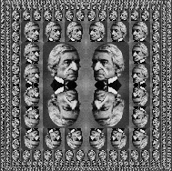
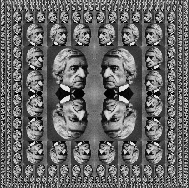

2.2 Hierarchical Data and the Closure Property
2.2 階層的データと閉包特性
As we have seen, pairs provide a primitive ``glue'' that we can use to construct compound data objects. Figure 2.2 shows a standard way to visualize a pair -- in this case, the pair formed by (cons 1 2). In this representation, which is called box-and-pointer notation, each object is shown as a pointer to a box. The box for a primitive object contains a representation of the object. For example, the box for a number contains a numeral. The box for a pair is actually a double box, the left part containing (a pointer to) the car of the pair and the right part containing the cdr.
今まで見てきたとおり、対は、複合的データオブジェクトを構築ために使えるプリミティブな「接着剤」を提供してくれる。 図2.2は、対——この事例では、(cons 1 2) により形成された対——を図像化するための、標準的方法を示している。 この表現——箱・ポインタ式の表記と呼ばれる——では、各オブジェクトは箱へのポインタとして示される。 プリミティブなオブジェクトの箱は、そのオブジェクトの表現を含む。 たとえば、数の箱は、数字を含む。 対の箱は、実際には二連続の箱であり、左の部分はその対の car (へのポインタ) を含み、右の部分は cdr を含む。
We have already seen that cons can be used to combine not only numbers but pairs as well. (You made use of this fact, or should have, in doing exercises 2.2 and 2.3.) As a consequence, pairs provide a universal building block from which we can construct all sorts of data structures. Figure 2.3 shows two ways to use pairs to combine the numbers 1, 2, 3, and 4.
cons が、数を結合するために使えるだけでなく、対を結合するためにも同様に使える、ということを私たちは既に見た。 (練習問題2.2と2.3を解くときに、君はこの事実を利用した、あるいは、したはずである。) 結果として、対は、あらゆる種類のデータ構造を構築できる元となる普遍的な基本構成要素を提供する。 図2.3は、対を使って1、2、3、4という数を結合するための二つの方法を示している。

The ability to create pairs whose elements are pairs is the essence of list structure's importance as a representational tool. We refer to this ability as the closure property of cons. In general, an operation for combining data objects satisfies the closure property if the results of combining things with that operation can themselves be combined using the same operation.6 Closure is the key to power in any means of combination because it permits us to create hierarchical structures -- structures made up of parts, which themselves are made up of parts, and so on.
要素が対であるような対を作成する能力は、表現の道具としてのリスト構造の重要性の本質である。 この能力のことを、私たちは、consの閉包特性と呼んでいる。 一般的に、データオブジェクト同士を結合するための演算は、もし、その演算によってもの同士を結合した結果が、それ自体、その同じ演算を用いて結合できるならば、閉包特性を満たす6。 閉包は、どの結合手段においても、力につながる鍵である。なぜなら、閉包によって、私たちは、階層的な構造——部分からできあがっている構造であって、それらの部分自体が部分からできあがっていて、といったもの——を作れるようになるからだ。
From the outset of chapter 1, we've made essential use of closure in dealing with procedures, because all but the very simplest programs rely on the fact that the elements of a combination can themselves be combinations. In this section, we take up the consequences of closure for compound data. We describe some conventional techniques for using pairs to represent sequences and trees, and we exhibit a graphics language that illustrates closure in a vivid way.7
1章の最初から、私たちは、手続きを扱う際に、既に閉包を本質的に利用していた。というのも、まさに最も単純なもの以外のすべてのプログラムは、コンビネーションの要素はそれ自体がコンビネーションであり得る、という事実に頼っているからだ。 本節では、複合的データに対する閉包の影響を取り上げる。 対を使って列や木を表現するためのいくつかの従来の技法について述べ、それから、鮮やかな方法で閉包を図解するグラフィックス言語を示そう7。
2.2.1 Representing Sequences
2.2.1 列を表現する
One of the useful structures we can build with pairs is a sequence -- an ordered collection of data objects. There are, of course, many ways to represent sequences in terms of pairs. One particularly straightforward representation is illustrated in figure 2.4, where the sequence 1, 2, 3, 4 is represented as a chain of pairs. The car of each pair is the corresponding item in the chain, and the cdr of the pair is the next pair in the chain. The cdr of the final pair signals the end of the sequence by pointing to a distinguished value that is not a pair, represented in box-and-pointer diagrams as a diagonal line and in programs as the value of the variable nil. The entire sequence is constructed by nested cons operations:
対を使って構築できる有用な構造のうちの一つは、列——データオブジェクトの順序付きの集まり——である。 もちろん、対を使って列を表現するには、多くの方法がある。 特に単純な一つの表現が、図2.4に示されており、ここでは、1、2、3、4が対の連なりとして表現されている。 各対の car は、その連なりの中で対応する項目であり、その対の cdr は、その連なりの中の次の対である。 最後の対の cdr は、対ではない際立った値を指すことで、列の終わりを知らせており、これは、箱・ポインタ式の図においては斜線で表現され、プログラムにおいては nil という変数で表現される。 列全体は、入れ子になった cons 演算により構築される。
(cons 1 (cons 2 (cons 3 (cons 4 nil))))
Such a sequence of pairs, formed by nested conses, is called a list, and Scheme provides a primitive called list to help in constructing lists.8 The above sequence could be produced by (list 1 2 3 4). In general,
このような対からなる列——入れ子になった cons により形成される——は、リストと呼ばれ、Schemeは、リストを構築する助けとなるように、list と呼ばれるプリミティブを提供している8。 上記の列は、(list 1 2 3 4) により作り出されたものかもしれない。 一般に、
(list <a1> <a2> ... <an>)
is equivalent to
は、以下と等価である。
(cons <a1> (cons <a2> (cons ... (cons <an> nil) ...)))
Lisp systems conventionally print lists by printing the sequence of elements, enclosed in parentheses. Thus, the data object in figure 2.4 is printed as (1 2 3 4):
Lispシステムは、慣習的に、要素の列を括弧で括って印字することで、リストを印字する。 よって、図2.4のデータオブジェクトは、(1 2 3 4) のように印字される。
(define one-through-four (list 1 2 3 4)) one-through-four (1 2 3 4)
Be careful not to confuse the expression (list 1 2 3 4) with the list (1 2 3 4), which is the result obtained when the expression is evaluated. Attempting to evaluate the expression (1 2 3 4) will signal an error when the interpreter tries to apply the procedure 1 to arguments 2, 3, and 4.
(list 1 2 3 4) という式と、(1 2 3 4) というリスト——その式が評価されたときに得られる結果——を、取り違えないように気をつけよう。 (1 2 3 4) という式を評価しようという試みは、インタプリタが 1 という手続きを 2 と 3 と 4 という引数に適用しようとするときに、エラーを知らせてくるだろう。
We can think of car as selecting the first item in the list, and of cdr as selecting the sublist consisting of all but the first item. Nested applications of car and cdr can be used to extract the second, third, and subsequent items in the list.9 The constructor cons makes a list like the original one, but with an additional item at the beginning.
car は、リストの最初の項目を選択することだと見なせるし、cdr は、最初の項目以外のすべてからなる部分リストを選択することだと見なせる。 car と cdr の、入れ子になった適用は、リスト中の、2番目、3番目、そしてその後の項目を、取り出すのに使える9。 cons というコンストラクタは、先頭に追加の項目がある以外は元のリストと同様のリストを作る。
(car one-through-four) 1 (cdr one-through-four) (2 3 4) (car (cdr one-through-four)) 2 (cons 10 one-through-four) (10 1 2 3 4) (cons 5 one-through-four) (5 1 2 3 4)
The value of nil, used to terminate the chain of pairs, can be thought of as a sequence of no elements, the empty list. The word nil is a contraction of the Latin word nihil, which means ``nothing.''10
nil——対の連なりを終わらせるために使われる——の値は、要素のない列、すなわち、空リストだと見なせる。 nil という言葉は、ラテン語の nihil という単語——「無」を意味する——の短縮形である10。
List operations
リスト演算
The use of pairs to represent sequences of elements as lists is accompanied by conventional programming techniques for manipulating lists by successively ``cdring down'' the lists. For example, the procedure list-ref takes as arguments a list and a number n and returns the nth item of the list. It is customary to number the elements of the list beginning with 0. The method for computing list-ref is the following:
要素の列をリストとして表現するのに対を使うことは、リストを次々と「cdr して小さくする」ことでリストを操作するための、従来のプログラミング技法を伴う。 たとえば、list-ref という手続きは、リストと n という数を引数として取り、そのリストの n 番目の要素を返す。 リストの要素には、0から始まる番号をつけるのが慣例である。 list-ref を計算する方法は以下のとおりだ。
- For n = 0, list-ref should return the car of the list.
- Otherwise, list-ref should return the (n - 1)st item of the cdr of the list.
- n = 0 のとき、list-ref は、そのリストの car を返すべきである。
- それ以外のとき、list-ref は、そのリストの cdr の、(n − 1) 番目の項目を返すべきである。
(define (list-ref items n) (if (= n 0) (car items) (list-ref (cdr items) (- n 1)))) (define squares (list 1 4 9 16 25)) (list-ref squares 3) 16
Often we cdr down the whole list. To aid in this, Scheme includes a primitive predicate null?, which tests whether its argument is the empty list. The procedure length, which returns the number of items in a list, illustrates this typical pattern of use:
リスト全体を cdr して下ることもしばしばである。 この点を付け加えるために、Schemeは、null? という原始的述語——引数が空リストかどうかをテストする——を含んでいる。 lengthという手続き——リスト内の項目の数を返す——は、この典型的な使用パターンを示す。
(define (length items) (if (null? items) 0 (+ 1 (length (cdr items))))) (define odds (list 1 3 5 7)) (length odds) 4
The length procedure implements a simple recursive plan. The reduction step is:
length の手続きは、単純な再帰的計画を実装している。 還元ステップは以下のとおりだ。
- The length of any list is 1 plus the length of the cdr of the list.
- いかなるリストの length (長さ) も、1と、そのリストの cdr の length との和である。
This is applied successively until we reach the base case:
これは、基底の場合に到達するまで、次々に適用される。
- The length of the empty list is 0.
- 空リストの length (長さ) は0である。
We could also compute length in an iterative style:
length を反復的な様式で計算することもできるだろう。
(define (length items) (define (length-iter a count) (if (null? a) count (length-iter (cdr a) (+ 1 count)))) (length-iter items 0))
Another conventional programming technique is to ``cons up'' an answer list while cdring down a list, as in the procedure append, which takes two lists as arguments and combines their elements to make a new list:
別の従来のプログラミング技法は、append という手続き——二つのリストを引数として取り、それらのリストの要素を合わせて新たなリストを作る——に見られるように、リストを cdr して小さくする一方で、答えのリストを「cons して大きくする」ことである。
(append squares odds) (1 4 9 16 25 1 3 5 7) (append odds squares) (1 3 5 7 1 4 9 16 25)
Append is also implemented using a recursive plan. To append lists list1 and list2, do the following:
append も、再帰的計画を使って実装される。 list1 と list2 というリストを append する (つなげる) には、以下のようにする。
- If list1 is the empty list, then the result is just list2.
- Otherwise, append the cdr of list1 and list2, and cons the car of list1 onto the result:
- もし list1 が空リストなら、結果は丁度 list2 である。
- それ以外の場合、list1 の cdr と list2 を append し、その結果の上に list1 の car を cons して載せよ。
(define (append list1 list2) (if (null? list1) list2 (cons (car list1) (append (cdr list1) list2))))
Exercise 2.17. Define a procedure last-pair that returns the list that contains only the last element of a given (nonempty) list:
練習問題2.17. 与えられた (非空の) リストの最後の要素のみを含むリストを返すような、last-pair という手続きを定義せよ。
(last-pair (list 23 72 149 34)) (34)
; 引数が非空かどうかのエラーチェックはしていない。 (define (last-pair arg-list) (if (null? (cdr arg-list)) arg-list (last-pair (cdr arg-list))))
Exercise 2.18. Define a procedure reverse that takes a list as argument and returns a list of the same elements in reverse order:
練習問題2.18. リストを引数としてとり、逆順で同じ要素を持つリストを返すような、reverse という手続きを定義せよ。
(reverse (list 1 4 9 16 25)) (25 16 9 4 1)
; たとえば、 (define (reverse arg-list) (if (null? arg-list) arg-list (append (reverse (cdr arg-list)) (list (car arg-list))))) ; とか、 (define (reverse arg-list) (if (or (null? arg-list) (null? (cdr arg-list))) arg-list (append (reverse (cdr arg-list)) (list (car arg-list))))) ; とかでもよいけれど、 (define (reverse arg-list) (define (reverse-iter remaining-list working-reversed-list) (if (null? remaining-list) working-reversed-list (reverse-iter (cdr remaining-list) (cons (car remaining-list) working-reversed-list)))) (reverse-iter arg-list '())) ; とするのがシンプルでよいと思う。 ; なお、Gauche だと、空リストはクオートしなくてもよいみたい。
Exercise 2.19. Consider the change-counting program of section 1.2.2. It would be nice to be able to easily change the currency used by the program, so that we could compute the number of ways to change a British pound, for example. As the program is written, the knowledge of the currency is distributed partly into the procedure first-denomination and partly into the procedure count-change (which knows that there are five kinds of U.S. coins). It would be nicer to be able to supply a list of coins to be used for making change.
練習問題2.19. 1.2.2節での、両替方法を数えるプログラムを考えよう。 あのプログラムで使われる通貨を簡単に変更できたら、素晴らしいことだろう。そうすれば、たとえば、英国ポンドを両替する方法の数を計算できるだろうから。 あのプログラムに書かれているとおり、通貨についての知識は、一部は first-denomination という手続きに振り分けられており、一部は count-change という手続き (5種類の米国硬貨があることを知っている) に振り分けられている。 両替に使われる硬貨のリストを供給できたら、もっと素晴らしいだろう。
We want to rewrite the procedure cc so that its second argument is a list of the values of the coins to use rather than an integer specifying which coins to use. We could then have lists that defined each kind of currency:
cc という手続きの2番目の引数が、どの硬貨を使うべきかを指定する整数ではなく、むしろ、使うべき硬貨の価格のリストとなるように、cc という手続きを書き換えたい。 また、通貨の各種類を定義したリストを持つこともできるだろう。
(define us-coins (list 50 25 10 5 1)) (define uk-coins (list 100 50 20 10 5 2 1 0.5))
We could then call cc as follows:
すると、cc を次のように呼び出せるだろう。
(cc 100 us-coins) 292
To do this will require changing the program cc somewhat. It will still have the same form, but it will access its second argument differently, as follows:
このようにするには、ある程度 cc のプログラムを変更することを要する。 cc のプログラムは、依然として同じ形式を保つだろうが、2番目の引数には、以下のとおり、違った方法でアクセスするだろう。
(define (cc amount coin-values) (cond ((= amount 0) 1) ((or (< amount 0) (no-more? coin-values)) 0) (else (+ (cc amount (except-first-denomination coin-values)) (cc (- amount (first-denomination coin-values)) coin-values)))))
Define the procedures first-denomination, except-first-denomination, and no-more? in terms of primitive operations on list structures. Does the order of the list coin-values affect the answer produced by cc? Why or why not?
リスト構造に関する原始的演算を用いて、first-denomination と except-first-denomination と no-more? という手続きを定義せよ。 coin-values というリストでの順序は、cc により生み出される答えに影響するか? なぜ影響するのか、あるいは、なぜ影響しないのか?
Exercise 2.20. The procedures +, *, and list take arbitrary numbers of arguments. One way to define such procedures is to use define with dotted-tail notation. In a procedure definition, a parameter list that has a dot before the last parameter name indicates that, when the procedure is called, the initial parameters (if any) will have as values the initial arguments, as usual, but the final parameter's value will be a list of any remaining arguments. For instance, given the definition
練習問題2.20. + や * や list という手続きは、任意の個数の引数をとる。 そういう手続きを定義するための一つの方法は、末尾にドットがついた記法とともに define を使うことである。 手続き定義においては、最後の仮引数名の前にドットを含むような仮引数リストが、手続きが呼ばれるときに、(もしあれば) 先頭側の仮引数は通常どおりに先頭側の実引数の値を持つ一方で、最後の仮引数の値は残りのすべての実引数の リスト となる、ということを示す。 たとえば、以下の定義が与えられると、
(define (f x y . z) <body>)
the procedure f can be called with two or more arguments. If we evaluate
f という手続きを、2個以上の実引数とともに呼ぶことができる。 もし以下のものを評価するなら、
(f 1 2 3 4 5 6)
then in the body of f, x will be 1, y will be 2, and z will be the list (3 4 5 6). Given the definition
f の本体において x は1となり、y は2となり、z は (3 4 5 6) というリストになるだろう。 以下の定義が与えられると、
(define (g . w) <body>)
the procedure g can be called with zero or more arguments. If we evaluate
g という手続きを、0個以上の実引数とともに呼ぶことができる。 もし以下のものを評価するなら、
(g 1 2 3 4 5 6)
then in the body of g, w will be the list (1 2 3 4 5 6).11
g の本体において、w は (1 2 3 4 5 6) というリストになるだろう11。
Use this notation to write a procedure same-parity that takes one or more integers and returns a list of all the arguments that have the same even-odd parity as the first argument. For example,
1個以上の整数を取り、1番目の実引数と同じ偶奇性を持つすべての実引数のリストを返すような、same-parity という手続きを、この記法を使って書け。
(same-parity 1 2 3 4 5 6 7) (1 3 5 7) (same-parity 2 3 4 5 6 7) (2 4 6)
; とりあえずこんな感じ? (define (same-parity ref-num . list-of-nums) (define (parity-check ref-parity same-parity-nums nums-to-be-checked) (cond ((null? nums-to-be-checked) same-parity-nums) ((= ref-parity (mod (car nums-to-be-checked) 2)) (parity-check ref-parity (cons (car nums-to-be-checked) same-parity-nums) (cdr nums-to-be-checked))) (else (parity-check ref-parity same-parity-nums (cdr nums-to-be-checked))))) (cons ref-num (reverse (parity-check (mod ref-num 2) () list-of-nums))))
Mapping over lists
リスト全体にわたる写像
One extremely useful operation is to apply some transformation to each element in a list and generate the list of results. For instance, the following procedure scales each number in a list by a given factor:
非常に有用な一つの演算は、なんらかの変換をリスト内の各要素に適用して、結果のリストを生成することである。 たとえば、以下の手続きは、リスト内のそれぞれの数に、与えられた因子を掛ける。
(define (scale-list items factor) (if (null? items) nil (cons (* (car items) factor) (scale-list (cdr items) factor)))) (scale-list (list 1 2 3 4 5) 10) (10 20 30 40 50)
We can abstract this general idea and capture it as a common pattern expressed as a higher-order procedure, just as in section 1.3. The higher-order procedure here is called map. Map takes as arguments a procedure of one argument and a list, and returns a list of the results produced by applying the procedure to each element in the list:12
私たちは、この一般的な考え方を抽象化することができ、それを、高階手続きとして表された共通パタンとして捉えることができる——1.3節とちょうど同様に。 ここでの高階手続きは、map と呼ばれる。 map は、1引数の手続きとリストとを引数として取り、その手続きをそのリスト内の各要素に適用することで作り出される結果のリストを返す12。
(define (map proc items) (if (null? items) nil (cons (proc (car items)) (map proc (cdr items))))) (map abs (list -10 2.5 -11.6 17)) (10 2.5 11.6 17) (map (lambda (x) (* x x)) (list 1 2 3 4)) (1 4 9 16)
Now we can give a new definition of scale-list in terms of map:
今や私たちは、map を使って、scale-list の新しい定義を与えることができる。
(define (scale-list items factor) (map (lambda (x) (* x factor)) items))
Map is an important construct, not only because it captures a common pattern, but because it establishes a higher level of abstraction in dealing with lists. In the original definition of scale-list, the recursive structure of the program draws attention to the element-by-element processing of the list. Defining scale-list in terms of map suppresses that level of detail and emphasizes that scaling transforms a list of elements to a list of results. The difference between the two definitions is not that the computer is performing a different process (it isn't) but that we think about the process differently. In effect, map helps establish an abstraction barrier that isolates the implementation of procedures that transform lists from the details of how the elements of the list are extracted and combined. Like the barriers shown in figure 2.1, this abstraction gives us the flexibility to change the low-level details of how sequences are implemented, while preserving the conceptual framework of operations that transform sequences to sequences. Section 2.2.3 expands on this use of sequences as a framework for organizing programs.
map は、共通パタンを捉えるから、というだけでなく、リストを扱う際に、より高い水準の抽象概念を築き上げるので、重要な構成である。 scale-list の元の定義では、プログラムの再帰的構造のせいで、リストの要素ごとの処理へと関心が向いてしまう。 map を使って scale-list を定義することで、その水準の細目は隠されるし、変倍によって要素のリストが結果のリストへと変換とれるのだ、ということが強調される。 二つの定義の違いは、コンピュータが異なるプロセスを実行している (そうではないのだが) という点ではなく、私たちが異なるやり方でプロセスについて考えるという点である。 実際には、リストの要素がどのように抽出されたり結合されたりするのか、という詳細から、リストを変換する手続きの実装を隔離するような、抽象化の防壁を築くのを、map が助けてくれる。 図2.1に示した防壁と同様、この抽象化は、列を列に変換するという演算の概念的枠組みを保ちつつも、私たちに、列がどのように実装されているかという低水準の詳細を変更するための、融通性を与えてくれる。 2.2.3節では、プログラムを組織化するための枠組みとしての、列のこのような使用について、さらに詳しく説明する。
Exercise 2.21. The procedure square-list takes a list of numbers as argument and returns a list of the squares of those numbers.
練習問題2.21. square-list という手続きは、数のリストを引数として取り、それらの数の二乗のリストを返す。
(square-list (list 1 2 3 4)) (1 4 9 16)
Here are two different definitions of square-list. Complete both of them by filling in the missing expressions:
ここに、square-list の二つの異なる定義がある。 それらのどちらについても、欠けている式を埋めることで、完成させよ。
(define (square-list items) (if (null? items) nil (cons <??> <??>))) (define (square-list items) (map <??> <??>))
Exercise 2.22. Louis Reasoner tries to rewrite the first square-list procedure of exercise 2.21 so that it evolves an iterative process:
練習問題2.22. ルイス・リーズナは、練習問題2.21の最初の square-list の手続きを、反復的プロセスを発達させるように、書き直そうと試みる。
(define (square-list items) (define (iter things answer) (if (null? things) answer (iter (cdr things) (cons (square (car things)) answer)))) (iter items nil))
Unfortunately, defining square-list this way produces the answer list in the reverse order of the one desired. Why?
あいにく、この方法で square-list を定義すると、所望の順序の逆順になった答えのリストが作り出される。 なぜか?
Louis then tries to fix his bug by interchanging the arguments to cons:
ルイスはそれから、cons に与える引数を入れ替えることで、自分のバグを直そうと試みる。
(define (square-list items) (define (iter things answer) (if (null? things) answer (iter (cdr things) (cons answer (square (car things)))))) (iter items nil))
This doesn't work either. Explain.
これもうまくいかない。 説明せよ。
Exercise 2.23. The procedure for-each is similar to map. It takes as arguments a procedure and a list of elements. However, rather than forming a list of the results, for-each just applies the procedure to each of the elements in turn, from left to right. The values returned by applying the procedure to the elements are not used at all -- for-each is used with procedures that perform an action, such as printing. For example,
練習問題2.23. for-each という手続きは map に似ている。 これは、手続きと、要素のリストとを、引数として取る。 しかし、for-each は、結果のリストを形成するというよりはむしろ、単に、その手続きを順々に左から右へと、要素の各々へと適用するだけである。 要素に手続きを適用することで返される値は、まったく使われない——for-each は、印字などの動作を実行する手続きとともに使われる。 たとえば、以下のように。
(for-each (lambda (x) (newline) (display x)) (list 57 321 88)) 57 321 88
The value returned by the call to for-each (not illustrated above) can be something arbitrary, such as true. Give an implementation of for-each.
for-each の呼び出しにより返される値 (上記には示されていない) は、任意の何か——たとえば真など——であってよい。 for-each の実装を与えよ。
2.2.2 Hierarchical Structures
2.2.2 階層的構造
The representation of sequences in terms of lists generalizes naturally to represent sequences whose elements may themselves be sequences. For example, we can regard the object ((1 2) 3 4) constructed by
リストを使った列の表現は、要素自体が列であるかもしれないような列を表現するように、自然と一般化してゆく。 たとえば、以下により構築された ((1 2) 3 4) というオブジェクトを、
(cons (list 1 2) (list 3 4))
as a list of three items, the first of which is itself a list, (1 2). Indeed, this is suggested by the form in which the result is printed by the interpreter. Figure 2.5 shows the representation of this structure in terms of pairs.
三つの項目のリスト——その三つの項目のうちの一つ目は、それ自体が、(1 2) というリストである——と見なすことができる。 実際、このことは、インタプリタにより結果が印字されている、その形式から、示唆される。 図2.5は、対の観点からこの構造の表現を示している。

Another way to think of sequences whose elements are sequences is as trees. The elements of the sequence are the branches of the tree, and elements that are themselves sequences are subtrees. Figure 2.6 shows the structure in figure 2.5 viewed as a tree.
要素が列であるような列を考えるための別の方法は、木として考えることである。 列の要素は、木の分枝であり、それ自体が列であるような要素は、部分木である。 図 2.6は、木として見た、図2.5の構造を、示している。

Recursion is a natural tool for dealing with tree structures, since we can often reduce operations on trees to operations on their branches, which reduce in turn to operations on the branches of the branches, and so on, until we reach the leaves of the tree. As an example, compare the length procedure of section 2.2.1 with the count-leaves procedure, which returns the total number of leaves of a tree:
再帰は、木構造を扱うための自然な手段だ。というのも、私たちは、しばしば、木の葉に到達するまで、木に対する演算をその分枝に対する演算へと還元し、そして、それを今度は分枝の分枝に対する演算へと還元し、というふうにしていくことができるからだ。 例として、2.2.1節の length の手続きを、count-leaves という手続き——木の中の葉の総数を返す——と比較せよ。
(define x (cons (list 1 2) (list 3 4))) (length x) 3 (count-leaves x) 4 (list x x) (((1 2) 3 4) ((1 2) 3 4)) (length (list x x)) 2 (count-leaves (list x x)) 8
To implement count-leaves, recall the recursive plan for computing length:
count-leaves を実装するために、length を計算するための再帰的計画を思い出そう。
- Length of a list x is 1 plus length of the cdr of x.
- Length of the empty list is 0.
- x なるリストの length (長さ) は、1と、x の cdr の length との和である。
- 空リストの length は0である。
Count-leaves is similar. The value for the empty list is the same:
count-leaves も似たようなものだ。 空リストに対する値は同じである。
- Count-leaves of the empty list is 0.
- 空リストの count-leaves は0である。
But in the reduction step, where we strip off the car of the list, we must take into account that the car may itself be a tree whose leaves we need to count. Thus, the appropriate reduction step is
しかし、還元ステップ——リストの car を剥ぎ取るところ——では、car 自体が、その葉を数える必要があるような木かもしれない、ということを、考慮に入れねばならない。 よって、適切な還元ステップは以下のとおりである。
- Count-leaves of a tree x is count-leaves of the car of x plus count-leaves of the cdr of x.
- x なる木の count-leaves は、x の car の count-leaves と、x の cdr の count-leaves との和である。
Finally, by taking cars we reach actual leaves, so we need another base case:
最後に、car を取ることで実際の葉に到達するので、もう一つの基底の場合が必要だ。
- Count-leaves of a leaf is 1.
- 葉のcount-leaves は1である。
To aid in writing recursive procedures on trees, Scheme provides the primitive predicate pair?, which tests whether its argument is a pair. Here is the complete procedure:13
木に対する再帰的手続きを書くのを支援するために、Schemeは、pair? という原始的述語——引数が対かどうかをテストする——を提供している。 ここに、完全な手続きがある13。
(define (count-leaves x) (cond ((null? x) 0) ((not (pair? x)) 1) (else (+ (count-leaves (car x)) (count-leaves (cdr x))))))
Exercise 2.24. Suppose we evaluate the expression (list 1 (list 2 (list 3 4))). Give the result printed by the interpreter, the corresponding box-and-pointer structure, and the interpretation of this as a tree (as in figure 2.6).
練習問題2.24 (list 1 (list 2 (list 3 4))) という式を評価するものと想定せよ。 インタプリタにより印字される結果と、それに対応する箱・ポインタ式の構造と、これの木としての解釈 (図2.6のようなもの) を示せ。
Exercise 2.25. Give combinations of cars and cdrs that will pick 7 from each of the following lists:
練習問題2.25. 以下のリストの各々から7を選び出すような、car と cdr の組み合わせを示せ。
(1 3 (5 7) 9) ((7)) (1 (2 (3 (4 (5 (6 7))))))
Exercise 2.26. Suppose we define x and y to be two lists:
練習問題2.26. x と y を、以下の二つのリストだと定義するものとする。
(define x (list 1 2 3)) (define y (list 4 5 6))
What result is printed by the interpreter in response to evaluating each of the following expressions:
以下の式の各々を評価するのに応じて、インタプリタにより印字される結果は、どのようなものか?
(append x y) (cons x y) (list x y)
Exercise 2.27. Modify your reverse procedure of exercise 2.18 to produce a deep-reverse procedure that takes a list as argument and returns as its value the list with its elements reversed and with all sublists deep-reversed as well. For example,
練習問題2.27. 練習問題2.18で君の書いた reverse の手続きを修正して、deep-reverse の手続きを作り出せ。この手続きは、リストを引数として取る。そして、要素が逆順になっていて、すべての部分リストも奥まで逆順になっているようなリストを、値として返す。 たとえば、以下のように。
(define x (list (list 1 2) (list 3 4))) x ((1 2) (3 4)) (reverse x) ((3 4) (1 2)) (deep-reverse x) ((4 3) (2 1))
Exercise 2.28. Write a procedure fringe that takes as argument a tree (represented as a list) and returns a list whose elements are all the leaves of the tree arranged in left-to-right order. For example,
練習問題2.28. 引数として木 (リストとして表現されているもの) を取り、その木のすべての葉を左から右へ向かう順序で並べたものを要素とするリストを返す、fringe という手続きを書け。 例えば、以下のようになる。
(define x (list (list 1 2) (list 3 4))) (fringe x) (1 2 3 4) (fringe (list x x)) (1 2 3 4 1 2 3 4)
Exercise 2.29. A binary mobile consists of two branches, a left branch and a right branch. Each branch is a rod of a certain length, from which hangs either a weight or another binary mobile. We can represent a binary mobile using compound data by constructing it from two branches (for example, using list):
練習問題2.29. 二分式モビールは二つの分枝——すなわち、左分枝と右分枝——からなる。 各分枝は、ある長さの棒であり、そこからは、錘か、別の二分式モビールがぶら下がる。 二つの分枝から (たとえば list を使って) 複合的データを構築することにより、私たちは、その複合的データを使って二分式モビールを表現できる。
(define (make-mobile left right) (list left right))
A branch is constructed from a length (which must be a number) together with a structure, which may be either a number (representing a simple weight) or another mobile:
分枝は、length (これは、数でなくてはならない) と、structure——これは、数 (単純な錘を表す) または他のモビールであり得る——から、構築される。
(define (make-branch length structure) (list length structure))
- Write the corresponding selectors left-branch and right-branch, which return the branches of a mobile, and branch-length and branch-structure, which return the components of a branch.
- Using your selectors, define a procedure total-weight that returns the total weight of a mobile.
- A mobile is said to be balanced if the torque applied by its top-left branch is equal to that applied by its top-right branch (that is, if the length of the left rod multiplied by the weight hanging from that rod is equal to the corresponding product for the right side) and if each of the submobiles hanging off its branches is balanced. Design a predicate that tests whether a binary mobile is balanced.
- Suppose we change the representation of mobiles so that the constructors are
- 対応するセレクタたる、left-branch および right-branch——モビールの分枝を返す——と、branch-length および branch-structure——分枝の構成要素を返す——と、を書け。
- 君のセレクタを使って、モビールの総重量を返す、total-weight という手続きを定義せよ。
- 次の場合に、モビールは、平衡であると言われる。すなわち、一番上の左側の分枝により加えられるトルクが、一番上の右側の分枝により加えられるトルクと等しくて (つまり、左の棒の長さに、その棒からぶら下がっている重量を掛けたものが、右側の対応する積と等しくて)、かつ、分枝からぶら下がっている部分モビールの各々が平衡である場合だ。 二分式モビールが平衡かどうかをテストする述語を設計せよ。
- コンストラクタが以下のとおりになるように、モビールの表現を変更するものとする。
(define (make-mobile left right) (cons left right)) (define (make-branch length structure) (cons length structure))
How much do you need to change your programs to convert to the new representation?
新しい表現へと転換するために、君のプログラムをどれくらい変更する必要があるか?
Mapping over trees
木全体にわたる写像
Just as map is a powerful abstraction for dealing with sequences, map together with recursion is a powerful abstraction for dealing with trees. For instance, the scale-tree procedure, analogous to scale-list of section 2.2.1, takes as arguments a numeric factor and a tree whose leaves are numbers. It returns a tree of the same shape, where each number is multiplied by the factor. The recursive plan for scale-tree is similar to the one for count-leaves:
map が、列を扱うための強力な抽象概念であるのとちょうど同じように、再帰をともなう map は、木を扱うための強力な抽象概念である。 たとえば、scale-tree という手続き——2.2.1節の scale-list に類似している——は、数値の因子と、葉が数であるような木を、引数として取る。 これは、同じ形の木を返すが、その木においては、各々の数は、上記の因子を掛けたものである。 scale-tree のための再帰的計画は、count-leaves のための再帰的計画に似ている。
(define (scale-tree tree factor) (cond ((null? tree) nil) ((not (pair? tree)) (* tree factor)) (else (cons (scale-tree (car tree) factor) (scale-tree (cdr tree) factor))))) (scale-tree (list 1 (list 2 (list 3 4) 5) (list 6 7)) 10) (10 (20 (30 40) 50) (60 70))
Another way to implement scale-tree is to regard the tree as a sequence of sub-trees and use map. We map over the sequence, scaling each sub-tree in turn, and return the list of results. In the base case, where the tree is a leaf, we simply multiply by the factor:
scale-tree を実装する別の方法は、木を部分木の列とみなして、map を使うことだ。 各部分木を順に変倍しながら、列の全体にわたって写像を行い、その結果のリストを返すわけだ。 基底の場合——木が葉である場合——では、単純に因子を掛ける。
(define (scale-tree tree factor) (map (lambda (sub-tree) (if (pair? sub-tree) (scale-tree sub-tree factor) (* sub-tree factor))) tree))
Many tree operations can be implemented by similar combinations of sequence operations and recursion.
木についての多くの演算は、列についての演算と再帰との類似の組み合わせにより、実装できる。
Exercise 2.30. Define a procedure square-tree analogous to the square-list procedure of exercise 2.21. That is, square-list should behave as follows:
練習問題2.30. 練習問題2.21の square-list の手続きに類似した、square-tree という手続きを定義せよ。つまり、square-tree は以下のように振る舞うべきである。 (原文の、square-list should … は誤記だろう。)
(square-tree (list 1 (list 2 (list 3 4) 5) (list 6 7))) (1 (4 (9 16) 25) (36 49))
Define square-tree both directly (i.e., without using any higher-order procedures) and also by using map and recursion.
square-tree を、直接的に (つまり、高階手続きを何も使わずに) 定義するとともに、map と再帰を使っても定義せよ。
Exercise 2.31. Abstract your answer to exercise 2.30 to produce a procedure tree-map with the property that square-tree could be defined as
練習問題2.31. square-tree が以下のように定義できたであろう、という特性を持った、tree-map という手続きを、練習問題2.30に対する君の答えを抽象化して作り出せ。
(define (square-tree tree) (tree-map square tree))
Exercise 2.32. We can represent a set as a list of distinct elements, and we can represent the set of all subsets of the set as a list of lists. For example, if the set is (1 2 3), then the set of all subsets is (() (3) (2) (2 3) (1) (1 3) (1 2) (1 2 3)). Complete the following definition of a procedure that generates the set of subsets of a set and give a clear explanation of why it works:
練習問題2.32. 集合は、異なる要素のリストとして表現することができ、その集合のすべての部分集合の集合は、リストのリストとして表現することができる。 たとえば、集合が (1 2 3) のとき、すべての部分集合の集合は、 (() (3) (2) (2 3) (1) (1 3) (1 2) (1 2 3)) である。 ある集合の部分集合の集合を生成する手続きについての、以下の定義を完成させて、なぜそれがうまく動くのか、明確に説明せよ。
(define (subsets s) (if (null? s) (list nil) (let ((rest (subsets (cdr s)))) (append rest (map <??> rest)))))
2.2.3 Sequences as Conventional Interfaces
2.2.3 従来のインタフェイスとしての列
In working with compound data, we've stressed how data abstraction permits us to design programs without becoming enmeshed in the details of data representations, and how abstraction preserves for us the flexibility to experiment with alternative representations. In this section, we introduce another powerful design principle for working with data structures -- the use of conventional interfaces.
データ抽象化のおかげで、どのようにして、データ表現の詳細に搦め捕られずにプログラムを設計できるようになるか、ということ、および、抽象化のおかげで、どのようにして、代替表現を使って実験するための融通性が保たれるか、ということを、私たちは、複合的データを使って作業する際に、強調してきた。 本節では、データ構造を使って作業するための、もう一つの強力な設計原理——つまり、従来のインタフェイス——を導入する。
In section 1.3 we saw how program abstractions, implemented as higher-order procedures, can capture common patterns in programs that deal with numerical data. Our ability to formulate analogous operations for working with compound data depends crucially on the style in which we manipulate our data structures. Consider, for example, the following procedure, analogous to the count-leaves procedure of section 2.2.2, which takes a tree as argument and computes the sum of the squares of the leaves that are odd:
プログラム抽象化——高階手続きとして実装される——が、数値的データを扱うプログラムの中の共通パタンを、いかにして捕まえることができるのか、ということを、1.3節で見た。 複合的データを使って作業するための類似の演算を定式化する能力は、私たちがデータ構造を操作する流儀に、非常に依存している。 たとえば、以下の手続き——2.2.2節の count-leaves という手続きに類似している——を考えよう。以下の手続きは、引数として木を取り、奇数であるような葉の二乗の和を計算する。
(define (sum-odd-squares tree) (cond ((null? tree) 0) ((not (pair? tree)) (if (odd? tree) (square tree) 0)) (else (+ (sum-odd-squares (car tree)) (sum-odd-squares (cdr tree))))))
On the surface, this procedure is very different from the following one, which constructs a list of all the even Fibonacci numbers Fib(k), where k is less than or equal to a given integer n:
表面上は、この手続きは、以下の手続き——すべての偶数のフィボナッチ数 Fib(k) のリストを構築する——とは全然違う。なおここで、k は、n という与えられた整数以下である。
(define (even-fibs n) (define (next k) (if (> k n) nil (let ((f (fib k))) (if (even? f) (cons f (next (+ k 1))) (next (+ k 1)))))) (next 0))
Despite the fact that these two procedures are structurally very different, a more abstract description of the two computations reveals a great deal of similarity. The first program
これらの二つの手続きが構造上は全然違う、という事実にもかかわらず、二つの計算についての、より抽象的な説明により、多大なる類似性が明らかにされる。 1番目のプログラムは、
- enumerates the leaves of a tree;
- filters them, selecting the odd ones;
- squares each of the selected ones; and
- accumulates the results using +, starting with 0.
- 木の葉を一つ一つ列挙し、
- それらをフィルタにかけて取捨選択して、奇数のものを選び、
- 選んだもののそれぞれを二乗し、
- 0から始めて、+ を使って結果を累積する。
The second program
2番目のプログラムは、
- enumerates the integers from 0 to n;
- computes the Fibonacci number for each integer;
- filters them, selecting the even ones; and
- accumulates the results using cons, starting with the empty list.
- 0から n までの整数を一つ一つ列挙し、
- 各整数に対してフィボナッチ数を計算し、
- それらをフィルタにかけて取捨選択して、偶数のものを選び、
- 空リストから始めて、cons を使って結果を累積する。
A signal-processing engineer would find it natural to conceptualize these processes in terms of signals flowing through a cascade of stages, each of which implements part of the program plan, as shown in figure 2.7. In sum-odd-squares, we begin with an enumerator, which generates a ``signal'' consisting of the leaves of a given tree. This signal is passed through a filter, which eliminates all but the odd elements. The resulting signal is in turn passed through a map, which is a ``transducer'' that applies the square procedure to each element. The output of the map is then fed to an accumulator, which combines the elements using +, starting from an initial 0. The plan for even-fibs is analogous.
信号処理のエンジニアなら、これらのプロセスを、次々と生じる段階という観点から、概念化することが自然だと思うだろう——それら段階の各々は、図2.7に示すように、プログラム計画の一部を実装するものである。 sum-odd-squaresでは、列挙器——与えられた木の葉からなる「信号」を生成する——から始めている。 この信号は、フィルタ——奇数の要素以外のすべてを削除する——を介して、渡される。 その結果生じる信号は、今度は、マップ——各要素に square の手続きを適用する「変換器」である——を介して、渡される。 マップの出力は、それから、累積器——最初の0から始めて、+ を使って要素を結合する——へと投入される。 even-fibs についての計画も類似である。

Unfortunately, the two procedure definitions above fail to exhibit this signal-flow structure. For instance, if we examine the sum-odd-squares procedure, we find that the enumeration is implemented partly by the null? and pair? tests and partly by the tree-recursive structure of the procedure. Similarly, the accumulation is found partly in the tests and partly in the addition used in the recursion. In general, there are no distinct parts of either procedure that correspond to the elements in the signal-flow description. Our two procedures decompose the computations in a different way, spreading the enumeration over the program and mingling it with the map, the filter, and the accumulation. If we could organize our programs to make the signal-flow structure manifest in the procedures we write, this would increase the conceptual clarity of the resulting code.
あいにく、上記の二つの手続き定義は、このような信号の流れの構造を示せていない。 たとえば、sum-odd-squares の手続きを吟味すると、列挙が、部分的には、null? と pair? のテストにより実装されつつ、部分的には、手続きにおける、木に関する再帰的構造により実装されている、ということに気づく。 同様に、累積は、部分的には、これらのテストの中に見つかり、部分的には、再帰の中で使われる加算の中に見つかる。 全般的に、どちらの手続きにも、信号の流れの説明の中の要素に対応するような、明瞭な部分はない。 私たちの二つの手続きは、異なる方法で計算を分解する——列挙を、プログラム全体に撒き散らして、マップとフィルタと累積に混ぜ合わせるのだ。 もし、私たちの書く手続きにおいて、信号の流れの構造を明白にするように、私たちのプログラムを系統立てることができたなら、これにより、結果として生じるコードの概念的な明晰さが増していただろう。
Sequence Operations
列演算
The key to organizing programs so as to more clearly reflect the signal-flow structure is to concentrate on the ``signals'' that flow from one stage in the process to the next. If we represent these signals as lists, then we can use list operations to implement the processing at each of the stages. For instance, we can implement the mapping stages of the signal-flow diagrams using the map procedure from section 2.2.1:
信号の流れの構造をより明瞭に反映するようにプログラムを系統立てるための鍵は、プロセス内の一つの段階から次の段階へと流れる「信号」に集中することである。 もしこれらの信号をリストとして表現するなら、各段階での処理を実装するのにリスト演算を使うことができる。 たとえば、信号の流れの図における写像の段階を、2.2.1節からの map の手続きを用いて、実装することができる。
(map square (list 1 2 3 4 5)) (1 4 9 16 25)
Filtering a sequence to select only those elements that satisfy a given predicate is accomplished by
与えられた述語を満たすような要素のみを選ぶために列をフィルタにかけることは、以下のようにして達成される。
(define (filter predicate sequence) (cond ((null? sequence) nil) ((predicate (car sequence)) (cons (car sequence) (filter predicate (cdr sequence)))) (else (filter predicate (cdr sequence)))))
For example,
たとえば、以下のとおり。
(filter odd? (list 1 2 3 4 5)) (1 3 5)
Accumulations can be implemented by
累積は、以下により実装できる。
(define (accumulate op initial sequence) (if (null? sequence) initial (op (car sequence) (accumulate op initial (cdr sequence))))) (accumulate + 0 (list 1 2 3 4 5)) 15 (accumulate * 1 (list 1 2 3 4 5)) 120 (accumulate cons nil (list 1 2 3 4 5)) (1 2 3 4 5)
All that remains to implement signal-flow diagrams is to enumerate the sequence of elements to be processed. For even-fibs, we need to generate the sequence of integers in a given range, which we can do as follows:
信号の流れの図を実装するためにまだ残っているものは、処理すべき要素の列を一つ一つ列挙することだけだ。 even-fibs については、与えられた範囲内の整数の列を生成する必要があるが、以下のようにしてこれを行うことが可能だ。
(define (enumerate-interval low high) (if (> low high) nil (cons low (enumerate-interval (+ low 1) high)))) (enumerate-interval 2 7) (2 3 4 5 6 7)
To enumerate the leaves of a tree, we can use14
木の葉を列挙するためには、以下のものを利用できる14。
(define (enumerate-tree tree) (cond ((null? tree) nil) ((not (pair? tree)) (list tree)) (else (append (enumerate-tree (car tree)) (enumerate-tree (cdr tree)))))) (enumerate-tree (list 1 (list 2 (list 3 4)) 5)) (1 2 3 4 5)
Now we can reformulate sum-odd-squares and even-fibs as in the signal-flow diagrams. For sum-odd-squares, we enumerate the sequence of leaves of the tree, filter this to keep only the odd numbers in the sequence, square each element, and sum the results:
さて今や私たちは、sum-odd-squares と even-fibs を、信号の流れの図にあるように再定式化できる。 sum-odd-squares については、木の葉の列を列挙し、これをフィルタにかけて奇数のみを列の中に保持し、各要素を二乗し、その結果を合計する。
(define (sum-odd-squares tree) (accumulate + 0 (map square (filter odd? (enumerate-tree tree)))))
For even-fibs, we enumerate the integers from 0 to n, generate the Fibonacci number for each of these integers, filter the resulting sequence to keep only the even elements, and accumulate the results into a list:
even-fibs については、0から n までの整数を列挙し、これらの整数それぞれに対してフィボナッチ数を生成し、その結果生じる列をフィルタにかけて偶数の要素のみを保持し、その結果をリストに累積する。
(define (even-fibs n) (accumulate cons nil (filter even? (map fib (enumerate-interval 0 n)))))
The value of expressing programs as sequence operations is that this helps us make program designs that are modular, that is, designs that are constructed by combining relatively independent pieces. We can encourage modular design by providing a library of standard components together with a conventional interface for connecting the components in flexible ways.
列演算としてプログラムを表現することの価値は、こうすることが、モジュール性のあるプログラム設計図——つまり、比較的独立した部分同士を結合することで構築される設計図——を作るうえで助けとなる、という点である。 標準的な構成要素のライブラリを、構成要素同士を柔軟な方法で結びつけるための従来のインタフェイスと一緒に供給することで、モジュール性のある設計を促進することができる。
Modular construction is a powerful strategy for controlling complexity in engineering design. In real signal-processing applications, for example, designers regularly build systems by cascading elements selected from standardized families of filters and transducers. Similarly, sequence operations provide a library of standard program elements that we can mix and match. For instance, we can reuse pieces from the sum-odd-squares and even-fibs procedures in a program that constructs a list of the squares of the first n + 1 Fibonacci numbers:
モジュール方式の構築は、工学的な設計における複雑さを抑制するための、強力な戦略である。 現実の信号処理アプリケーションでは、たとえば、しばしば設計者たちは、一群の標準化されたフィルタと変換器の中から選んだ要素同士を順々につなぐことで、システムを構築する。 同様に、列演算は、異なるもの同士をうまく組み合わせられるような標準的なプログラム要素のライブラリを提供する。 たとえば、最初の n + 1 個のフィボナッチ数の二乗のリストを構築するようなプログラムにおいて、私たちは、sum-odd-squares と even-fibs の手続きの一部分を使いまわせる。
(define (list-fib-squares n) (accumulate cons nil (map square (map fib (enumerate-interval 0 n))))) (list-fib-squares 10) (0 1 1 4 9 25 64 169 441 1156 3025)
We can rearrange the pieces and use them in computing the product of the odd integers in a sequence:
上記の一部分を配置しなおして、それらを、列の中の奇数の整数の積を計算するのに用いることもできる。
(define (product-of-squares-of-odd-elements sequence) (accumulate * 1 (map square (filter odd? sequence)))) (product-of-squares-of-odd-elements (list 1 2 3 4 5)) 225
We can also formulate conventional data-processing applications in terms of sequence operations. Suppose we have a sequence of personnel records and we want to find the salary of the highest-paid programmer. Assume that we have a selector salary that returns the salary of a record, and a predicate programmer? that tests if a record is for a programmer. Then we can write
従来のデータ処理アプリケーションを、列演算の観点から定式化することもできる。 人事記録の列があるものとして、一番高給取りのプログラマの給料を見つけたいものとしよう。 記録のうちの給料を返す、salary というセレクタと、記録がプログラマのものかどうかをテストする、programmer? という述語があるものと想定しよう。 すると、以下のように書ける。
(define (salary-of-highest-paid-programmer records) (accumulate max 0 (map salary (filter programmer? records))))
These examples give just a hint of the vast range of operations that can be expressed as sequence operations.15
これらの例は、列演算として表現できる、とても広い範囲の演算のうちの、ほんのわずかなものを示しているだけである15。
Sequences, implemented here as lists, serve as a conventional interface that permits us to combine processing modules. Additionally, when we uniformly represent structures as sequences, we have localized the data-structure dependencies in our programs to a small number of sequence operations. By changing these, we can experiment with alternative representations of sequences, while leaving the overall design of our programs intact. We will exploit this capability in section 3.5, when we generalize the sequence-processing paradigm to admit infinite sequences.
列——ここではリストとして実装されている——は、処理モジュール同士を結合することを可能にしてくれるような従来のインタフェイスとして、機能する。 さらに、諸構造を一様に列として表現する場合には、プログラムにおけるデータ構造依存性を、少数の列演算だけに局限した。 これらを変更することで、私たちは、プログラムの全体的な設計は元のままにしておきつつも、列の代替表現を使って実験することができる。 この能力は、3.5節で列処理のバラダイムを一般化して無限の列を認めるときに、活用することにしよう。
Exercise 2.33. Fill in the missing expressions to complete the following definitions of some basic list-manipulation operations as accumulations:
練習問題2.33. 欠けている式を埋めて、累積動作としての、いくつかの基本的なリスト操作演算についての、以下の定義を完成させよ。
(define (map p sequence) (accumulate (lambda (x y) <??>) nil sequence)) (define (append seq1 seq2) (accumulate cons <??> <??>)) (define (length sequence) (accumulate <??> 0 sequence))
Exercise 2.34. Evaluating a polynomial in x at a given value of x can be formulated as an accumulation. We evaluate the polynomial
練習問題2.34 x についての多項式を、与えられた x の値において評価することは、累積として定式化できる。以下の式を評価するのに、

using a well-known algorithm called Horner's rule, which structures the computation as
ホーナの法則と呼ばれる周知のアルゴリズム——計算を以下のように組織立てる——を使う。

In other words, we start with an, multiply by x, add an-1, multiply by x, and so on, until we reach a0.16 Fill in the following template to produce a procedure that evaluates a polynomial using Horner's rule. Assume that the coefficients of the polynomial are arranged in a sequence, from a0 through an.
換言すれば、an から始めて、x を掛け、an−1 を足し、x を掛け、などとしていって、a0 に到達するまで続けるのだ16。 以下の雛型を埋めて、ホーナの法則を用いて多項式を評価するような手続きを作り出せ。 多項式の係数が、 a0 から an までの列の形で用意されているものとせよ。
(define (horner-eval x coefficient-sequence) (accumulate (lambda (this-coeff higher-terms) <??>) 0 coefficient-sequence))
For example, to compute 1 + 3x + 5x3 + x5 at x = 2 you would evaluate
たとえば、 x = 2 において 1 + 3x + 5x3 + x5 を計算するには、以下を評価する。
(horner-eval 2 (list 1 3 0 5 0 1))
Exercise 2.35. Redefine count-leaves from section 2.2.2 as an accumulation:
練習問題2.35. 節2.2.2の count-leaves を、累積として再定義せよ。
(define (count-leaves t) (accumulate <??> <??> (map <??> <??>)))
Exercise 2.36. The procedure accumulate-n is similar to accumulate except that it takes as its third argument a sequence of sequences, which are all assumed to have the same number of elements. It applies the designated accumulation procedure to combine all the first elements of the sequences, all the second elements of the sequences, and so on, and returns a sequence of the results. For instance, if s is a sequence containing four sequences, ((1 2 3) (4 5 6) (7 8 9) (10 11 12)), then the value of (accumulate-n + 0 s) should be the sequence (22 26 30). Fill in the missing expressions in the following definition of accumulate-n:
練習問題2.36. accumulate-n という手続きは、列——どの列も同数の要素を有するものと想定されている——の列を、3番目の引数として取ること以外は、accumulate に似ている。 accumulate-n という手続きは、指定された累積手続きを適用して、それらの列の1番目の要素すべてを結合し、それらの列の2番目の要素すべてを結合し、などとしていき、そして、その結果の列を返す。 たとえば、s が、四つの列を含む ((1 2 3) (4 5 6) (7 8 9) (10 11 12)) という列であるとき、 (accumulate-n + 0 s) の値は、 (22 26 30) という列になるべきである。 以下の accumulate-n の定義中の欠けている式を埋めよ。
(define (accumulate-n op init seqs) (if (null? (car seqs)) nil (cons (accumulate op init <??>) (accumulate-n op init <??>))))
Exercise 2.37. Suppose we represent vectors v = (vi) as sequences of numbers, and matrices m = (mij) as sequences of vectors (the rows of the matrix). For example, the matrix
練習問題2.37. v = (vi) なるベクトルを、数の列として表現するものとし、 m = (mij) なる行列を、ベクトル (行列の行) の列として表現するものとする。 たとえば、以下の行列は、

is represented as the sequence ((1 2 3 4) (4 5 6 6) (6 7 8 9)). With this representation, we can use sequence operations to concisely express the basic matrix and vector operations. These operations (which are described in any book on matrix algebra) are the following:
((1 2 3 4) (4 5 6 6) (6 7 8 9)) という列として表現される。 この表現を使うと、列演算を用いて、基本的な行列とベクトルの演算を簡潔に表すことができる。 これらの演算 (行列代数についてのどんな本でも説明されている) とは、以下のようなものである。

We can define the dot product as17
内積を次のように定義できる17。
(define (dot-product v w) (accumulate + 0 (map * v w)))
Fill in the missing expressions in the following procedures for computing the other matrix operations. (The procedure accumulate-n is defined in exercise 2.36.)
残りの行列演算を計算するための、以下の手続きの中の、欠けている式を埋めよ。 (accumulate-n という手続きは、練習問題2.36で定義されている。)
(define (matrix-*-vector m v) (map <??> m)) (define (transpose mat) (accumulate-n <??> <??> mat)) (define (matrix-*-matrix m n) (let ((cols (transpose n))) (map <??> m)))
Exercise 2.38. The accumulate procedure is also known as fold-right, because it combines the first element of the sequence with the result of combining all the elements to the right. There is also a fold-left, which is similar to fold-right, except that it combines elements working in the opposite direction:
練習問題2.38. accumulate の手続きは、fold-right としても知られる。というのも、これは、列の最初の要素を、右側のすべての要素を結合した結果に、結合するからである。 fold-left もあって、これは、逆方向にはたらいて要素を結合する点を除いては、fold-right に似ている。
(define (fold-left op initial sequence) (define (iter result rest) (if (null? rest) result (iter (op result (car rest)) (cdr rest)))) (iter initial sequence))
What are the values of
以下のものの値は、どのようなものだろうか?
(fold-right / 1 (list 1 2 3)) (fold-left / 1 (list 1 2 3)) (fold-right list nil (list 1 2 3)) (fold-left list nil (list 1 2 3))
Give a property that op should satisfy to guarantee that fold-right and fold-left will produce the same values for any sequence.
fold-right と fold-left が任意の列に対して同じ値を作り出すだろう、と保証するために、op が満たすべき性質を述べよ。
Exercise 2.39. Complete the following definitions of reverse (exercise 2.18) in terms of fold-right and fold-left from exercise 2.38:
練習問題2.39. 練習問題2.38の fold-right と fold-left を用いた、以下の reverse (練習問題2.18) の定義を、完成させよ。
(define (reverse sequence) (fold-right (lambda (x y) <??>) nil sequence)) (define (reverse sequence) (fold-left (lambda (x y) <??>) nil sequence))
Nested Mappings
入れ子になった写像
We can extend the sequence paradigm to include many computations that are commonly expressed using nested loops.18 Consider this problem: Given a positive integer n, find all ordered pairs of distinct positive integers i and j, where 1< j< i< n, such that i + j is prime. For example, if n is 6, then the pairs are the following:
一般には、入れ子になったループを用いて表されるような、多くの計算を含むように、列パラダイムを拡張できる18。 次の問題を考えよう。 n という正の整数が与えられたとき、 1 ≤ j ≤ i ≤ n だとして、 i + j が素数となるような、相異なる正の整数 i と j の、すべての順序付きの対を見つけ出せ。 たとえば、n が6のとき、そのような対とは、以下のとおりのものである。

A natural way to organize this computation is to generate the sequence of all ordered pairs of positive integers less than or equal to n, filter to select those pairs whose sum is prime, and then, for each pair (i, j) that passes through the filter, produce the triple (i,j,i + j).
この計算を組織立てる自然な方法は、n 以下の正整数同士のすべての順序付きの対の列を生成し、その対の和が素数であるような対を選択するようにフィルタにかけ、それから、フィルタを通過した各々の対 (i, j) に対して、 (i, j, i + j) という三つ組を作り出すことである。
Here is a way to generate the sequence of pairs: For each integer i< n, enumerate the integers j<i, and for each such i and j generate the pair (i,j). In terms of sequence operations, we map along the sequence (enumerate-interval 1 n). For each i in this sequence, we map along the sequence (enumerate-interval 1 (- i 1)). For each j in this latter sequence, we generate the pair (list i j). This gives us a sequence of pairs for each i. Combining all the sequences for all the i (by accumulating with append) produces the required sequence of pairs:19
ここに、対の列を生成する方法がある。 i ≤ n なる各整数 i に対して、 j < i なる整数 j を列挙し、 そのようなそれぞれの i と j に対して、 (i, j) という対を生成するのである。 列演算の観点から言うと、 (enumerate-interval 1 n) という列に沿って写像を行うわけだ。 この列の中の各 i に対して、 (enumerate-interval 1 (- i 1)) という列に沿って写像を行う。 この後者の列の中の各 j に対して、 (list i j) という対を生成する。 これにより、各 i に対する対の列が与えられる。 すべての i についての列を、(append を用いて累積することにより) 結合すると、必要な対の列ができあがる19。
(accumulate append nil (map (lambda (i) (map (lambda (j) (list i j)) (enumerate-interval 1 (- i 1)))) (enumerate-interval 1 n)))
The combination of mapping and accumulating with append is so common in this sort of program that we will isolate it as a separate procedure:
写像と、append を使った累積との組み合わせは、この種のプログラムではとても一般的なので、この組み合わせを単独の手続きとして分離しよう。
(define (flatmap proc seq) (accumulate append nil (map proc seq)))
Now filter this sequence of pairs to find those whose sum is prime. The filter predicate is called for each element of the sequence; its argument is a pair and it must extract the integers from the pair. Thus, the predicate to apply to each element in the sequence is
さて、この対の列をフィルタにかけて、和が素数であるような対を見つけ出そう。 フィルタ述語は、列の各要素に対して呼ばれる。その引数は対であり、フィルタ述語は、その対から整数を抽出しなくてはならない。 よって、列の各要素に適用すべき述語は、以下のとおりである。
(define (prime-sum? pair) (prime? (+ (car pair) (cadr pair))))
Finally, generate the sequence of results by mapping over the filtered pairs using the following procedure, which constructs a triple consisting of the two elements of the pair along with their sum:
最後に、フィルタにかけた後の対のすべてにわたって、以下の手続き——その対の二つの要素と、それら要素同士の和からなる三つ組を構築する——を使って写像を行うことにより、得られた結果の列を、生成する。
(define (make-pair-sum pair) (list (car pair) (cadr pair) (+ (car pair) (cadr pair))))
Combining all these steps yields the complete procedure:
これらすべてのステップを組み合わせることで、完全な手続きが生み出される。
(define (prime-sum-pairs n) (map make-pair-sum (filter prime-sum? (flatmap (lambda (i) (map (lambda (j) (list i j)) (enumerate-interval 1 (- i 1)))) (enumerate-interval 1 n)))))
Nested mappings are also useful for sequences other than those that enumerate intervals. Suppose we wish to generate all the permutations of a set S; that is, all the ways of ordering the items in the set. For instance, the permutations of {1,2,3} are {1,2,3}, { 1,3,2}, {2,1,3}, { 2,3,1}, { 3,1,2}, and { 3,2,1}. Here is a plan for generating the permutations of S: For each item x in S, recursively generate the sequence of permutations of S - x,20 and adjoin x to the front of each one. This yields, for each x in S, the sequence of permutations of S that begin with x. Combining these sequences for all x gives all the permutations of S:21
区間で列挙を行うもの以外の列についても、入れ子になった写像は有用である。 S という集合のすべての順列——つまり、この集合内の項目を順序付けて並べるすべての方法——を生成したいのだとしよう。 たとえば、 {1,2,3} の順列は、 (1,2,3} と {1,3,2} と {2,1,3} と {2,3,1} と {3,1,2} と {3,2,1} である。 ここに、S の順列を生成する計画がある。 S の中の各要素 x に対して、 S − x の順列の列を再帰的に生成し20、そのそれぞれの先頭に x を連結する。 これにより、S の中の各 x に対して、x から始まるような S の順列の列が生み出される。 すべての x についてのこれらの列を結合することで、S のすべての順列が与えられる21。
(define (permutations s) (if (null? s) ; empty set? (list nil) ; sequence containing empty set (flatmap (lambda (x) (map (lambda (p) (cons x p)) (permutations (remove x s)))) s)))
Notice how this strategy reduces the problem of generating permutations of S to the problem of generating the permutations of sets with fewer elements than S. In the terminal case, we work our way down to the empty list, which represents a set of no elements. For this, we generate (list nil), which is a sequence with one item, namely the set with no elements. The remove procedure used in permutations returns all the items in a given sequence except for a given item. This can be expressed as a simple filter:
どのようにしてこの戦略が、S の順列を生成するという問題を、S より少ない要素からなる集合の順列を生成するという問題へと帰着させるのか、ということに注意せよ。 終端となる場合において、なんとか空リスト——要素を持たない集合を表す——にたどりつく。 これのために、(list nil)——一つの項目を有する列、すなわち、要素を持たない集合——を生成する。 permutations の中で使われている remove という手続きは、与えられた列の中の、与えられた項目以外のすべての項目を返す。 これは、単純なフィルタとして表せる。
(define (remove item sequence) (filter (lambda (x) (not (= x item))) sequence))
Exercise 2.40. Define a procedure unique-pairs that, given an integer n, generates the sequence of pairs (i,j) with 1< j< i< n. Use unique-pairs to simplify the definition of prime-sum-pairs given above.
練習問題2.40. n という整数が与えられたときに、 1 ≤ j < i ≤ n を満たすような、 (i,j) という対の列を生成する、unique-pairs という手続きを、定義せよ。 unique-pairs を使って、上記の prime-sum-pairs の定義を簡単化せよ。
Exercise 2.41. Write a procedure to find all ordered triples of distinct positive integers i, j, and k less than or equal to a given integer n that sum to a given integer s.
練習問題2.41. 合計が、与えられた s という整数になるような、i、j、k という、相異なる、与えられた n という整数以下の、正の整数の、すべての順序付き三つ組を、見つける手続きを書け。
練習問題2.42.

The ``eight-queens puzzle'' asks how to place eight queens on a chessboard so that no queen is in check from any other (i.e., no two queens are in the same row, column, or diagonal). One possible solution is shown in figure 2.8. One way to solve the puzzle is to work across the board, placing a queen in each column. Once we have placed k - 1 queens, we must place the kth queen in a position where it does not check any of the queens already on the board. We can formulate this approach recursively: Assume that we have already generated the sequence of all possible ways to place k - 1 queens in the first k - 1 columns of the board. For each of these ways, generate an extended set of positions by placing a queen in each row of the kth column. Now filter these, keeping only the positions for which the queen in the kth column is safe with respect to the other queens. This produces the sequence of all ways to place k queens in the first k columns. By continuing this process, we will produce not only one solution, but all solutions to the puzzle.
「エイトクイーン・パズル」は、他のいずれかのクイーンから王手をかけられているクイーンがないように (つまり、どの二つのクイーンも、同じ行、同じ列、または同じ斜線上にはないように)、八つのクイーンをチェス盤上に配置する方法を問うものである。 一つの可能な解が、図2.8に示されている。 このパズルを解くための一つの方法は、各列にクイーンを配置しながら、盤全体にわたって作業することだ。 一旦、k − 1 個のクイーンを配置したら、既に盤上にあるどのクイーンにも王手をかけないような位置に、k 番目のクイーンを配置しなくてはならない。 この取り組み方を、再帰的に定式化することができる。 k − 1 個のクイーンを、盤の最初の k − 1 列に配置するための、すべての可能な方法の列を、既に生成してあるものとする。 これらの方法の各々に対して、k 番目の列の各行にクイーンを配置することにより、位置の、拡張された集合を生成しよう。 さてここで、これらをフィルタにかけ、k 番目の列のクイーンが、他の残りのクイーンに関して安全であるような位置のみを、保つようにしよう。 これにより、 k − 1 個のクイーンを、最初の k − 1 列に配置するための、すべての方法の列が、作り出される。 このプロセスを続けることで、一つの解だけでなく、このパズルに対するすべての解が作り出されるだろう。
We implement this solution as a procedure queens, which returns a sequence of all solutions to the problem of placing n queens on an n× n chessboard. Queens has an internal procedure queen-cols that returns the sequence of all ways to place queens in the first k columns of the board.
私たちは、この解法を queens という手続きとして実装する——この手続きは、 n× n のチェス盤上に n 個のクイーンを配置するという問題に対する、すべての解の列を返す。 queens は、盤の最初の k 列にクイーンを配置するためのすべての方法の列を返すような、queen-cols という内部手続きを有する。
(define (queens board-size) (define (queen-cols k) (if (= k 0) (list empty-board) (filter (lambda (positions) (safe? k positions)) (flatmap (lambda (rest-of-queens) (map (lambda (new-row) (adjoin-position new-row k rest-of-queens)) (enumerate-interval 1 board-size))) (queen-cols (- k 1)))))) (queen-cols board-size))
In this procedure rest-of-queens is a way to place k - 1 queens in the first k - 1 columns, and new-row is a proposed row in which to place the queen for the kth column. Complete the program by implementing the representation for sets of board positions, including the procedure adjoin-position, which adjoins a new row-column position to a set of positions, and empty-board, which represents an empty set of positions. You must also write the procedure safe?, which determines for a set of positions, whether the queen in the kth column is safe with respect to the others. (Note that we need only check whether the new queen is safe -- the other queens are already guaranteed safe with respect to each other.)
この手続きにおいて、rest-of-queens は、 k − 1 個のクイーンを、最初の k − 1 列に配置するための方法であり、 new-row は、k 番目の列のクイーンを配置すべきところとして提案された行である。 adjoin-position という手続き——位置の集合に、新たな行・列の位置を接合する——と、empty-board——位置の空集合を表現する——も含めて、盤上の位置の集合のための表現を実装することで、このプログラムを完成させよ。 また、safe? という手続き——位置の集合に対して、k 番目の列のクイーンが、残りのクイーンに関して安全かどうかを判定する——も、書かねばならない。 (新たなクイーンが安全かどうか、ということだけを調べればよい——というのも、残りのクイーンは、お互いに関して安全であることが既に保証されているので——ということに注意せよ。)
Exercise 2.43. Louis Reasoner is having a terrible time doing exercise 2.42. His queens procedure seems to work, but it runs extremely slowly. (Louis never does manage to wait long enough for it to solve even the 6× 6 case.) When Louis asks Eva Lu Ator for help, she points out that he has interchanged the order of the nested mappings in the flatmap, writing it as
練習問題2.43. ルイス・リーズナは、練習問題2.42を解くのに、ひどい目にあっているところである。 彼の queens の手続きは、動きはするようなのだが、ひどくのろのろと実行されるのだ (ルイスは、6×6 の場合でさえ、この手続きが解を出すのに十分な長さだけどうにか待ってみせる、ということが決してなかった)。 ルイスがエヴァ・リュ・エイタに助けを求めると、エヴァは、flatmap における入れ子の写像の順序を、ルイスが入れ替えて、以下のように書いたのだ、と指摘する。
(flatmap (lambda (new-row) (map (lambda (rest-of-queens) (adjoin-position new-row k rest-of-queens)) (queen-cols (- k 1)))) (enumerate-interval 1 board-size))
Explain why this interchange makes the program run slowly. Estimate how long it will take Louis's program to solve the eight-queens puzzle, assuming that the program in exercise 2.42 solves the puzzle in time T.
なぜこの入れ替えのせいで、プログラムの実行が遅くなるのか、説明せよ。 ルイスのプログラムがエイトクイーン・パズルを解くのに、どれくらいの時間がかかるかを、見積もれ——ただし、練習問題2.42 のプログラムは、このパズルを T なる時間で解くものとする。
2.2.4 Example: A Picture Language
2.2.4 例: お絵描き言語
This section presents a simple language for drawing pictures that illustrates the power of data abstraction and closure, and also exploits higher-order procedures in an essential way. The language is designed to make it easy to experiment with patterns such as the ones in figure 2.9, which are composed of repeated elements that are shifted and scaled.22 In this language, the data objects being combined are represented as procedures rather than as list structure. Just as cons, which satisfies the closure property, allowed us to easily build arbitrarily complicated list structure, the operations in this language, which also satisfy the closure property, allow us to easily build arbitrarily complicated patterns.
本節では、データ抽象化と閉包の威力を例示する、お絵描き用の簡単な言語を提示し、本質的なやり方で高階手続きを利用する。 その言語は、図2.9にあるようなパタン——移動されたり変倍されたりした繰り返し要素からなる——を使って実験を行うのを容易にするように、設計されている22。 この言語では、結合されているデータオブジェクトは、リスト構造というよりむしろ手続きとして表現される。 cons——閉包特性を満たす——のおかげで、任意に入り組んだリスト構造を容易に構築できるようになったのとちょうど同じように、この言語における演算——これらも閉包特性を満たす——のおかげで、任意に入り組んだパタンを容易に構築できる。
 

The picture language
お絵描き言語
When we began our study of programming in section 1.1, we emphasized the importance of describing a language by focusing on the language's primitives, its means of combination, and its means of abstraction. We'll follow that framework here.
1.1節でプログラミングの勉強を始めたとき、私たちは、言語のプリミティブと、結合の手段と、抽象化の手段とに焦点を合わせて言語を記述することの重要性を、強調した。 私たちは、ここでもその枠組みに従おう。
Part of the elegance of this picture language is that there is only one kind of element, called a painter. A painter draws an image that is shifted and scaled to fit within a designated parallelogram-shaped frame. For example, there's a primitive painter we'll call wave that makes a crude line drawing, as shown in figure 2.10. The actual shape of the drawing depends on the frame -- all four images in figure 2.10 are produced by the same wave painter, but with respect to four different frames. Painters can be more elaborate than this: The primitive painter called rogers paints a picture of MIT's founder, William Barton Rogers, as shown in figure 2.11.23 The four images in figure 2.11 are drawn with respect to the same four frames as the wave images in figure 2.10.
このお絵描き言語の洗練ぶりの一端は、一種類の要素——
To combine images, we use various operations that construct new painters from given painters. For example, the beside operation takes two painters and produces a new, compound painter that draws the first painter's image in the left half of the frame and the second painter's image in the right half of the frame. Similarly, below takes two painters and produces a compound painter that draws the first painter's image below the second painter's image. Some operations transform a single painter to produce a new painter. For example, flip-vert takes a painter and produces a painter that draws its image upside-down, and flip-horiz produces a painter that draws the original painter's image left-to-right reversed.
画像を結合するために、私たちは、与えられたペインタから新たなペインタを構築する様々な演算を使う。 たとえば、beside 演算は、二つのペインタを取る。そして、一つ目のペインタの画像を枠の左半分に描くとともに二つ目のペインタの画像を枠の右半分に描くような、新しい複合ペインタを、作り出す。 同様に、below は、二つのペインタを取る。そして、一つ目のペインタの画像を二つ目のペインタの画像の下に描くような複合ペインタを、作り出す。 いくつかの演算は、単一のペインタを変形して、新たなペインタを作り出す。 たとえば、flip-vert は、ペインタを取り、その画像を上下さかさまに描くようなペインタを作り出すし、flip-horiz は、元のペインタの画像を左右逆に描くようなペインタを作り出す。
 |
 |
|
 |
 |
 |
 |
|
 |
 |
Figure 2.12 shows the drawing of a painter called wave4 that is built up in two stages starting from wave:
図2.12は、wave から始めて二段階で構築される、wave4 と呼ばれるペインタの、線画を示す。
(define wave2 (beside wave (flip-vert wave))) (define wave4 (below wave2 wave2))
 |
 |
| (define wave2 (beside wave (flip-vert wave))) | (define wave4 (below wave2 wave2)) |
In building up a complex image in this manner we are exploiting the fact that painters are closed under the language's means of combination. The beside or below of two painters is itself a painter; therefore, we can use it as an element in making more complex painters. As with building up list structure using cons, the closure of our data under the means of combination is crucial to the ability to create complex structures while using only a few operations.
このやり方で複雑な画像を構築する際に、私たちは、ペインタが言語の結合手段のもとで閉じているという事実を、利用している。 二つのペインタの beside または below は、それ自体がペインタである。よって、それを、より複雑なペインタを作る際に、要素として使うことができる。 cons を使ってリスト構造を構築するときと同様に、結合手段のもとでの私たちのデータの閉包は、少数の演算のみを使いつつも複雑な構造を作成する能力には不可欠である。
Once we can combine painters, we would like to be able to abstract typical patterns of combining painters. We will implement the painter operations as Scheme procedures. This means that we don't need a special abstraction mechanism in the picture language: Since the means of combination are ordinary Scheme procedures, we automatically have the capability to do anything with painter operations that we can do with procedures. For example, we can abstract the pattern in wave4 as
一旦ペインタ同士を結合できれば、ペインタ同士を結合する典型的パタンを抽象化したくなるだろう。 私たちは、ペインタ演算を、Scheme手続きとして実装しよう。 これは、お絵描き言語での特殊な抽象化の仕組みを必要としない、ということを意味する。 結合手段は普通のSchemeの手続きなので、私たちは、自動的に、手続きを使って行えることは何でもペインタ演算を使って行える能力を持っている。 たとえば、wave4 の中のパタンを次のように抽象化できるし、
(define (flipped-pairs painter) (let ((painter2 (beside painter (flip-vert painter)))) (below painter2 painter2)))
and define wave4 as an instance of this pattern:
このパタンの
(define wave4 (flipped-pairs wave))
We can also define recursive operations. Here's one that makes painters split and branch towards the right as shown in figures 2.13 and 2.14:
私たちは、再帰的演算も定義できる。 図2.13と2.14に示すように、右へ向かってペインタを分裂・枝分かれさせる再帰的演算が、ここにある。
(define (right-split painter n) (if (= n 0) painter (let ((smaller (right-split painter (- n 1)))) (beside painter (below smaller smaller)))))
 |
 |
right-split n | corner-split n |
We can produce balanced patterns by branching upwards as well as towards the right (see exercise 2.44 and figures 2.13 and 2.14):
右向きと同様に上向きにも枝分かれすることで、釣り合いの取れたパタンを作り出せる (練習問題2.44、図2.13、図2.14を参照)。
(define (corner-split painter n) (if (= n 0) painter (let ((up (up-split painter (- n 1))) (right (right-split painter (- n 1)))) (let ((top-left (beside up up)) (bottom-right (below right right)) (corner (corner-split painter (- n 1)))) (beside (below painter top-left) (below bottom-right corner))))))
 |
 |
| (right-split wave 4) | (right-split rogers 4) |
 |
 |
| (corner-split wave 4) | (corner-split rogers 4) |
By placing four copies of a corner-split appropriately, we obtain a pattern called square-limit, whose application to wave and rogers is shown in figure 2.9:
corner-split の四つの写しを適宜配置することで、square-limit と呼ばれるパタンが得られて、それを wave と rogers に適用したものは、図2.9に示されている。
(define (square-limit painter n) (let ((quarter (corner-split painter n))) (let ((half (beside (flip-horiz quarter) quarter))) (below (flip-vert half) half))))
Exercise 2.44. Define the procedure up-split used by corner-split. It is similar to right-split, except that it switches the roles of below and beside.
練習問題2.44. corner-split で使われている up-split という手続きを定義せよ。 それは、below と beside の役割を交換しているという点を除いて、right-split に似ている。
Higher-order operations
高階演算
In addition to abstracting patterns of combining painters, we can work at a higher level, abstracting patterns of combining painter operations. That is, we can view the painter operations as elements to manipulate and can write means of combination for these elements -- procedures that take painter operations as arguments and create new painter operations.
ペインタ同士を結合するパタンを抽象化することだけでなく、私たちは、より高いレベルで作業することができる——ペインタ演算同士を結合するパタンを抽象化するのだ。 つまり、私たちは、ペインタ演算を、操作すべき要素と見なすことができるし、これらの要素同士の結合手段——ペインタ演算を引数として取り、新しいペインタ演算を作成するような手続き——を書くことができる。
For example, flipped-pairs and square-limit each arrange four copies of a painter's image in a square pattern; they differ only in how they orient the copies. One way to abstract this pattern of painter combination is with the following procedure, which takes four one-argument painter operations and produces a painter operation that transforms a given painter with those four operations and arranges the results in a square. Tl, tr, bl, and br are the transformations to apply to the top left copy, the top right copy, the bottom left copy, and the bottom right copy, respectively.
たとえば、flipped-pairs と square-limit は、各々、ペインタの画像の四つの写しを、四角いパタンに配置する。両者は、それらの写しの向きをどう定めるかという点でのみ、異なる。 ペインタ結合のこのパタンを抽象化する一つの方法は、以下の手続きを使うことである。以下の手続きは、1引数のペインタ演算を四つ取る。そして、与えられたペインタを、それら四つの演算を使って変形して、その結果を四角形の中に配置する。 tl と tr と bl と br は、それぞれ、左上の写し、右上の写し、左下の写し、右下の写しに対して、適用すべき変形である。
(define (square-of-four tl tr bl br) (lambda (painter) (let ((top (beside (tl painter) (tr painter))) (bottom (beside (bl painter) (br painter)))) (below bottom top))))
Then flipped-pairs can be defined in terms of square-of-four as follows:24
すると、square-of-four を用いて、以下のように flipped-pairs を定義できて24、
(define (flipped-pairs painter) (let ((combine4 (square-of-four identity flip-vert identity flip-vert))) (combine4 painter)))
and square-limit can be expressed as25
square-limit を次のように表せる25。
(define (square-limit painter n) (let ((combine4 (square-of-four flip-horiz identity rotate180 flip-vert))) (combine4 (corner-split painter n))))
Exercise 2.45. Right-split and up-split can be expressed as instances of a general splitting operation. Define a procedure split with the property that evaluating
練習問題2.45. right-split と up-split は、一般的な分割演算の一例として表せる。 次のような性質を持つ、split という手続きを定義せよ——すなわち、その性質とは、以下のものを評価することで、
(define right-split (split beside below)) (define up-split (split below beside))
produces procedures right-split and up-split with the same behaviors as the ones already defined.
定義済みのものと同じ振る舞いをするような、right-split と up-split という手続きが作り出される、という性質である。
Frames
枠
Before we can show how to implement painters and their means of combination, we must first consider frames. A frame can be described by three vectors -- an origin vector and two edge vectors. The origin vector specifies the offset of the frame's origin from some absolute origin in the plane, and the edge vectors specify the offsets of the frame's corners from its origin. If the edges are perpendicular, the frame will be rectangular. Otherwise the frame will be a more general parallelogram.
ペインタの実装の仕方と、ペインタ同士の結合の手段とを私たちが示せる前に、私たちはまず、枠について考えねばならない。 枠は、三つのベクトル——原点ベクトルと、二つの辺ベクトル——で記述できる。 原点ベクトルは、平面内の何らかの絶対的原点からの、枠の原点のずれを指定し、辺ベクトルは、枠の原点からの、枠の角のずれを指定する。 もし、それらの辺同士が直角をなしているなら、その枠は、長方形になるだろう。 それ以外の場合は、その枠は、より一般的な平行四辺形になるだろう。
Figure 2.15 shows a frame and its associated vectors. In accordance with data abstraction, we need not be specific yet about how frames are represented, other than to say that there is a constructor make-frame, which takes three vectors and produces a frame, and three corresponding selectors origin-frame, edge1-frame, and edge2-frame (see exercise 2.47).
図2.15は、枠と、その枠に関連づけられたベクトルを、示している。 データ抽象化にしたがうと、私たちは、枠がどのように表現されるのかということについては、make-frame というコンストラクタ——三つのベクトルを取って枠を作り出す——と、三つの対応するセレクタたる origin-frame と edge1-frame と edge2-frame とが存在する、と述べることを除いて、まだ明確に言う必要はない (練習問題2.47を参照)。

We will use coordinates in the unit square (0< x,y< 1) to specify images. With each frame, we associate a frame coordinate map, which will be used to shift and scale images to fit the frame. The map transforms the unit square into the frame by mapping the vector v = (x,y) to the vector sum
画像を指定するのに、単位正方形 (0 ≤ x,y ≤ 1) 内の座標を使おう。 それぞれの枠に、私たちは、枠座標写像——その枠に合うように画像を移動したり変倍したりするのに使われるだろう——を対応づける。 その写像は、 v = (x,y) というベクトルを、以下のベクトル和に写像することにより、単位正方形を枠へと変形する。

For example, (0,0) is mapped to the origin of the frame, (1,1) to the vertex diagonally opposite the origin, and (0.5,0.5) to the center of the frame. We can create a frame's coordinate map with the following procedure:26
たとえば、 (0, 0) は、枠の原点に写像され、 (1, 1) は、対角線上で原点と逆側の頂点に写像され、 (0.5, 0.5) は、枠の中心に写像される。 私たちは、以下の手続きを使って、枠の座標写像を作れる26。
(define (frame-coord-map frame) (lambda (v) (add-vect (origin-frame frame) (add-vect (scale-vect (xcor-vect v) (edge1-frame frame)) (scale-vect (ycor-vect v) (edge2-frame frame))))))
Observe that applying frame-coord-map to a frame returns a procedure that, given a vector, returns a vector. If the argument vector is in the unit square, the result vector will be in the frame. For example,
frame-coord-map を枠に適用することで、ベクトルが与えられるとベクトルを返すような手続きが返される、ということに気づいてほしい。 もし引数のベクトルが単位正方形の中にあれば、結果のベクトルは枠の中にあるだろう。 たとえば、以下のものは、
((frame-coord-map a-frame) (make-vect 0 0))
returns the same vector as
以下のものと同じベクトルを返す。
(origin-frame a-frame)
Exercise 2.46. A two-dimensional vector v running from the origin to a point can be represented as a pair consisting of an x-coordinate and a y-coordinate. Implement a data abstraction for vectors by giving a constructor make-vect and corresponding selectors xcor-vect and ycor-vect. In terms of your selectors and constructor, implement procedures add-vect, sub-vect, and scale-vect that perform the operations vector addition, vector subtraction, and multiplying a vector by a scalar:
練習問題2.46. 原点からある点までの二次元ベクトル v は、x 座標と y 座標からなる対として表現できる。 コンストラクタである make-vect と、対応するセレクタである xcor-vect および ycor-vect を与えることによって、ベクトル用のデータ抽象を実装せよ。 ベクトル加算と、ベクトル減算と、ベクトルをスカラ倍する乗算、という演算を行うような、add-vect と sub-vect と scale-vect という手続きを、君のセレクタとコンストラクタを使って実装せよ。

Exercise 2.47. Here are two possible constructors for frames:
練習問題2.47. 枠のための可能なコンストラクタが、ここに二つある。
(define (make-frame origin edge1 edge2) (list origin edge1 edge2)) (define (make-frame origin edge1 edge2) (cons origin (cons edge1 edge2)))
For each constructor supply the appropriate selectors to produce an implementation for frames.
各コンストラクタに対して、枠の実装を作り出すための適切なセレクタを提供せよ。
Painters
ペインタ
A painter is represented as a procedure that, given a frame as argument, draws a particular image shifted and scaled to fit the frame. That is to say, if p is a painter and f is a frame, then we produce p's image in f by calling p with f as argument.
枠が引数として与えられたときに、その枠に合うように移動・変倍された特定の画像を描くような手続きとして、ペインタは表現される。 つまり、もし p がペインタであり f が枠であるならば、私たちは、f を引数として p を呼ぶことで、f の中に p の画像を作り出す。
The details of how primitive painters are implemented depend on the particular characteristics of the graphics system and the type of image to be drawn. For instance, suppose we have a procedure draw-line that draws a line on the screen between two specified points. Then we can create painters for line drawings, such as the wave painter in figure 2.10, from lists of line segments as follows:27
原始的なペインタがどう実装されるのかという詳細は、グラフィックス・システムの特定の性質と、描かれるべき画像の種類に、依存する。 たとえば、画面上で、指定された二つの点の間に線を引くような、draw-line という手続きがあるとしよう。 すると、図2.10における wave ペインタのような、線描用のペインタを、以下のように線分のリストから作成することができる27。
(define (segments->painter segment-list) (lambda (frame) (for-each (lambda (segment) (draw-line ((frame-coord-map frame) (start-segment segment)) ((frame-coord-map frame) (end-segment segment)))) segment-list)))
The segments are given using coordinates with respect to the unit square. For each segment in the list, the painter transforms the segment endpoints with the frame coordinate map and draws a line between the transformed points.
線分は、単位正方形に対する座標を用いて、与えられる。 リスト中の各線分に対して、ペインタは、枠座標写像を使ってセグメントの両端点を変換し、変換した点同士の間に線を引く。
Representing painters as procedures erects a powerful abstraction barrier in the picture language. We can create and intermix all sorts of primitive painters, based on a variety of graphics capabilities. The details of their implementation do not matter. Any procedure can serve as a painter, provided that it takes a frame as argument and draws something scaled to fit the frame.28
ペインタを手続きとして表すことで、お絵描き言語には、強力な抽象化の防壁が打ち立てられる。 様々なグラフィックス性能に基づいて、私たちは、あらゆる種類の原始的ペインタを作成できるし、混ぜ合わせられる。 それら様々なグラフィックス性能の実装の詳細は、重要ではない。 任意の手続きは、ペインタとして機能できる——引数として枠を取り、その枠に合うように変倍した何かを描く限りは28。
Exercise 2.48. A directed line segment in the plane can be represented as a pair of vectors -- the vector running from the origin to the start-point of the segment, and the vector running from the origin to the end-point of the segment. Use your vector representation from exercise 2.46 to define a representation for segments with a constructor make-segment and selectors start-segment and end-segment.
練習問題2.48. 平面上の有向線分は、ベクトル——原点から線分の始点までのベクトルと、原点から線分の終点までのベクトル——の対として表せる。 make-segment というコンストラクタと、start-segment および end-segment というセレクタを有するような、線分用の表現を、練習問題2.46での君のベクトル表現を使って、定義せよ。
Exercise 2.49. Use segments->painter to define the following primitive painters:
練習問題2.49. segments->painter を用いて、以下の原始的ペインタを定義せよ。
- The painter that draws the outline of the designated frame.
- The painter that draws an ``X'' by connecting opposite corners of the frame.
- The painter that draws a diamond shape by connecting the midpoints of the sides of the frame.
- The wave painter.
- 指定された枠の輪郭を描くペインタ。
- 枠の、向かい合う角同士を結ぶことで「X」を描くペインタ。
- 枠の辺の中点同士を結ぶことでダイヤ形を描くペインタ。
- wave ペインタ。
Transforming and combining painters
ペインタを変形し結合する
An operation on painters (such as flip-vert or beside) works by creating a painter that invokes the original painters with respect to frames derived from the argument frame. Thus, for example, flip-vert doesn't have to know how a painter works in order to flip it -- it just has to know how to turn a frame upside down: The flipped painter just uses the original painter, but in the inverted frame.
ペインタに対する (flip-vert あるいは beside のような) 演算は、引数の枠から導出される枠に対して元のペインタを呼び出すようなペインタを作成することで、動作する。 よって、たとえば flip-vert は、ペインタが自身をひっくり返すためにどのように動作するのかについて、知らなくてよい ——ただ、枠をどうやって上下さかさまにするのかさえ、知っていればよいのである。 ひっくり返されたペインタは、単に元のペインタを使うだけである——ただし、裏返しになった枠の中で、ではあるが。
Painter operations are based on the procedure transform-painter, which takes as arguments a painter and information on how to transform a frame and produces a new painter. The transformed painter, when called on a frame, transforms the frame and calls the original painter on the transformed frame. The arguments to transform-painter are points (represented as vectors) that specify the corners of the new frame: When mapped into the frame, the first point specifies the new frame's origin and the other two specify the ends of its edge vectors. Thus, arguments within the unit square specify a frame contained within the original frame.
ペインタ演算は、transform-painter という手続きに基づいていて、この手続きは、引数として、ペインタと、枠をどう変形するのかについての情報を取り、新たなペインタを作り出す。 変形されたペインタは、ある枠について呼ばれると、その枠を変形し、変形した枠について元のペインタを呼び出す。 transform-painter に対する引数は、新たな枠の角を指定する点 (ベクトルとして表されている) である。 つまり、その枠の中に写像されたときに、1番目の点は新たな枠の原点を指定し、残りの二つは新たな枠の辺ベクトルの端を指定する。 よって、単位正方形の中に収まる引数は、元の枠の中に含まれる枠を指定する。
(define (transform-painter painter origin corner1 corner2) (lambda (frame) (let ((m (frame-coord-map frame))) (let ((new-origin (m origin))) (painter (make-frame new-origin (sub-vect (m corner1) new-origin) (sub-vect (m corner2) new-origin)))))))
Here's how to flip painter images vertically:
ここに、ペインタ画像を縦にひっくり返す方法を示す。
(define (flip-vert painter) (transform-painter painter (make-vect 0.0 1.0) ; new origin (make-vect 1.0 1.0) ; new end of edge1 (make-vect 0.0 0.0))) ; new end of edge2
Using transform-painter, we can easily define new transformations. For example, we can define a painter that shrinks its image to the upper-right quarter of the frame it is given:
transform-painter を使うと、新しい変形を簡単に定義できる。 たとえば、自分の画像を、自分に与えられた枠の右上の四分の一へと縮めるようなペインタを、定義できる。
(define (shrink-to-upper-right painter) (transform-painter painter (make-vect 0.5 0.5) (make-vect 1.0 0.5) (make-vect 0.5 1.0)))
Other transformations rotate images counterclockwise by 90 degrees29
他の変形は、反時計回りに90度、画像を回転する29か、
(define (rotate90 painter) (transform-painter painter (make-vect 1.0 0.0) (make-vect 1.0 1.0) (make-vect 0.0 0.0)))
or squash images towards the center of the frame:30
あるいは、枠の中心に向けて画像を押し込む30。
(define (squash-inwards painter) (transform-painter painter (make-vect 0.0 0.0) (make-vect 0.65 0.35) (make-vect 0.35 0.65)))
Frame transformation is also the key to defining means of combining two or more painters. The beside procedure, for example, takes two painters, transforms them to paint in the left and right halves of an argument frame respectively, and produces a new, compound painter. When the compound painter is given a frame, it calls the first transformed painter to paint in the left half of the frame and calls the second transformed painter to paint in the right half of the frame:
枠の変形は、二つ以上のペインタを結合する手段を定義する鍵でもある。 たとえば、beside という手続きは、二つのペインタを取り、それらを変形して、引数の枠の左半分と右半分をそれぞれ描画し、新たな複合ペインタを作り出す。 その複合ペインタに枠が与えられると、その複合ペインタは、変形された1番目のペインタを呼び出して枠の左半分を描画し、変形された2番目のペインタを呼び出して枠の右半分を描画する。
(define (beside painter1 painter2) (let ((split-point (make-vect 0.5 0.0))) (let ((paint-left (transform-painter painter1 (make-vect 0.0 0.0) split-point (make-vect 0.0 1.0))) (paint-right (transform-painter painter2 split-point (make-vect 1.0 0.0) (make-vect 0.5 1.0)))) (lambda (frame) (paint-left frame) (paint-right frame)))))
Observe how the painter data abstraction, and in particular the representation of painters as procedures, makes beside easy to implement. The beside procedure need not know anything about the details of the component painters other than that each painter will draw something in its designated frame.
ペインタのデータ抽象化——とりわけ、手続きとしてのペインタの表現——が、いかに beside を実装しやすくしているかに、気づいてほしい。 beside の手続きは、構成要素のペインタの詳細については、各ペインタが当該ペインタに指定された枠の中に何かを描くだろう、ということ以外は、何も知る必要がない。
Exercise 2.50. Define the transformation flip-horiz, which flips painters horizontally, and transformations that rotate painters counterclockwise by 180 degrees and 270 degrees.
練習問題2.50. flip-horiz という変形——ペインタを水平方向にひっくり返す——と、ペインタを反時計回りに180度および270度回転する変形を、定義せよ。
Exercise 2.51. Define the below operation for painters. Below takes two painters as arguments. The resulting painter, given a frame, draws with the first painter in the bottom of the frame and with the second painter in the top. Define below in two different ways -- first by writing a procedure that is analogous to the beside procedure given above, and again in terms of beside and suitable rotation operations (from exercise 2.50).
練習問題2.51. ペインタ用の below という演算を定義せよ。 below は、二つのペインタを引数として取る。 結果として生じるペインタは、枠を与えられると、その枠の下側に1番目のペインタを使って描画し、上側に2番目のペインタを使って描画する。 below を、二つの異なる方法で定義せよ——まずは、上記の beside の手続きに類似の手続きを書くことによって、そして、もう一度は、beside と、(練習問題2.50の) 適切な回転とを用いて。
Levels of language for robust design
頑健な設計のための言語の諸水準
The picture language exercises some of the critical ideas we've introduced about abstraction with procedures and data. The fundamental data abstractions, painters, are implemented using procedural representations, which enables the language to handle different basic drawing capabilities in a uniform way. The means of combination satisfy the closure property, which permits us to easily build up complex designs. Finally, all the tools for abstracting procedures are available to us for abstracting means of combination for painters.
お絵描き言語は、手続きとデータを使った抽象化について私たちが今までに導入してきた重要な概念のいくつかを鍛えてくれる。 基本的なデータ抽象化、すなわちペインタは、手続き的表現を使って実装されており、そのことによって、この言語は、異なる基本的描画能力を、一律なやり方で扱うことができるようになっている。 結合手段は閉包特性を満たし、そのことによって、私たちは、複雑な設計を簡単に築き上げることができる。 最後に、手続きを抽象化するためのすべての手段は、私たちがペインタ用の結合手段を抽象化するために利用可能である。
We have also obtained a glimpse of another crucial idea about languages and program design. This is the approach of stratified design, the notion that a complex system should be structured as a sequence of levels that are described using a sequence of languages. Each level is constructed by combining parts that are regarded as primitive at that level, and the parts constructed at each level are used as primitives at the next level. The language used at each level of a stratified design has primitives, means of combination, and means of abstraction appropriate to that level of detail.
私たちはまた、言語とプログラム設計についての別の重要な概念も、垣間見てきた。 これは、階層化された設計という取り組み方——つまり、複雑なシステムは、言語の列を使って記述されるような諸水準の列として構築されるべきだ、という考え方——である。 各水準は、その水準で原始的と見なされる部品同士を結合することで構築され、各水準で構築される部品は、次の水準ではプリミティブとして使われる。 階層化された設計の各水準で使われる言語には、その水準の詳細さに対して適切な、プリミティブと結合手段と抽象化手段がある。
Stratified design pervades the engineering of complex systems. For example, in computer engineering, resistors and transistors are combined (and described using a language of analog circuits) to produce parts such as and-gates and or-gates, which form the primitives of a language for digital-circuit design.31 These parts are combined to build processors, bus structures, and memory systems, which are in turn combined to form computers, using languages appropriate to computer architecture. Computers are combined to form distributed systems, using languages appropriate for describing network interconnections, and so on.
階層化された設計は、複雑なシステムの工学の全体に浸透している。 たとえば、計算機工学では、レジスタやトランジスタは、結合され (かつ、アナログ回路の言葉を用いて記述され)、ANDゲートやORゲートなどの部品を作り出し、これらの部品は、ディジタル回路設計用の言語のプリミティブを形成する31。 これらの部品は、結合されて、プロセッサやバス構造やメモリシステムを構築し、今度はそれらが、コンピュータを形成するために、コンピュータ・アーキテクチャに適した言語を使って結合される。 コンピュータは、分散システムを形成するために、ネットワークの相互連結を記述するのに適した言語を用いて結合される……などなどである。
As a tiny example of stratification, our picture language uses primitive elements (primitive painters) that are created using a language that specifies points and lines to provide the lists of line segments for segments->painter, or the shading details for a painter like rogers. The bulk of our description of the picture language focused on combining these primitives, using geometric combiners such as beside and below. We also worked at a higher level, regarding beside and below as primitives to be manipulated in a language whose operations, such as square-of-four, capture common patterns of combining geometric combiners.
階層化のほんの小さな例として、私たちのお絵描き言語は、segments->painter に線分のリストを与えるために点と線を指定する言語を使って作成される原始的要素 (原始的ペインタ) を使うし、あるいは、rogers のようなペインタに濃淡付けの詳細を与えるために云々といった原始的要素 (原始的ペインタ) を使う。 お絵描き言語についての私たちの説明の大部分は、これらのプリミティブ同士を結合することに対して焦点を当てていたわけだが、そこでは、beside や below のような幾何的結合子を用いていた。 私たちは、より高い水準でも作業した——つまり、その言語の演算 (square-of-four など) が、幾何的結合子同士を結合する共通のパタンを捉える、といったような言語において、操作されるべきプリミティブだ、というふうに、beside や below を見なしたわけである。
Stratified design helps make programs robust, that is, it makes it likely that small changes in a specification will require correspondingly small changes in the program. For instance, suppose we wanted to change the image based on wave shown in figure 2.9. We could work at the lowest level to change the detailed appearance of the wave element; we could work at the middle level to change the way corner-split replicates the wave; we could work at the highest level to change how square-limit arranges the four copies of the corner. In general, each level of a stratified design provides a different vocabulary for expressing the characteristics of the system, and a different kind of ability to change it.
階層化された設計は、プログラムを頑健にするのに役立つ。つまり、仕様における小さな変更は、それに対応するように小さな変更しか、プログラムにおいて必要としないだろう、という見込みが、階層化された設計をすれば、高いわけである。 たとえば、図2.9に示した wave に基づく画像を変更したいとする。 もっとも低い水準では、wave 要素の詳細な外観を変更するように、作業できることだろう。中間の水準では、corner-split が wave を複製する方法を変更するように、作業できることだろう。もっとも高い水準では、角の四つの写しを square-limit がどう配置するのかを変更するように、作業できることだろう。 一般に、階層化された設計の各水準は、システムの特性を表すための異なる語彙を提供し、その特性を変更する異なる種類の能力を提供する。
Exercise 2.52. Make changes to the square limit of wave shown in figure 2.9 by working at each of the levels described above. In particular:
練習問題2.52. 図2.9に示した、wave の四角い極限に、上記の諸水準の各々において作業をすることにより、変更を加えよ。 特に、
- Add some segments to the primitive wave painter of exercise 2.49 (to add a smile, for example).
- Change the pattern constructed by corner-split (for example, by using only one copy of the up-split and right-split images instead of two).
- Modify the version of square-limit that uses square-of-four so as to assemble the corners in a different pattern. (For example, you might make the big Mr. Rogers look outward from each corner of the square.)
- 練習問題2.49の、原始的な wave ペインタに、いくつかの線分を追加せよ (たとえば、笑顔を追加するなど)。
- corner-split により構築されるパタンを変更せよ (たとえば、up-split と right-split の画像のうち、二つではなく、ただ一つの写しだけを、用いることによって)。
- square-limit の、square-of-four を使うバージョンを、四隅を別のパタンで組み立てるように、修正せよ (たとえば、大きなロジャースさんに正方形の各々の角から外へと視線を向けさせてもよいだろう)。
6 The use of the word ``closure'' here comes from abstract algebra, where a set of elements is said to be closed under an operation if applying the operation to elements in the set produces an element that is again an element of the set. The Lisp community also (unfortunately) uses the word ``closure'' to describe a totally unrelated concept: A closure is an implementation technique for representing procedures with free variables. We do not use the word ``closure'' in this second sense in this book.
ここでの「閉包」という単語の使い方は、抽象代数に由来している。抽象代数では、もし、ある演算を集合内の要素同士に対して適用することで、またしてもその集合の要素であるような要素が作り出されるならば、要素の集合は、その演算に関して閉じている、と言われる。 Lisp界では、(不幸なことに) 「閉包」という単語を、まったく無関係の概念を記述するのにも使う——閉包とは、自由変数をともなう手続きを表現するための実装技法である、というように。 本書では、この2番目の意味では「閉包」という単語を使わない。
7 The notion that a means of combination should satisfy closure is a straightforward idea. Unfortunately, the data combiners provided in many popular programming languages do not satisfy closure, or make closure cumbersome to exploit. In Fortran or Basic, one typically combines data elements by assembling them into arrays -- but one cannot form arrays whose elements are themselves arrays. Pascal and C admit structures whose elements are structures. However, this requires that the programmer manipulate pointers explicitly, and adhere to the restriction that each field of a structure can contain only elements of a prespecified form. Unlike Lisp with its pairs, these languages have no built-in general-purpose glue that makes it easy to manipulate compound data in a uniform way. This limitation lies behind Alan Perlis's comment in his foreword to this book: ``In Pascal the plethora of declarable data structures induces a specialization within functions that inhibits and penalizes casual cooperation. It is better to have 100 functions operate on one data structure than to have 10 functions operate on 10 data structures.''
結合の手段は閉包を満たすべきだ、という見解は、分かりやすい考え方だ。 あいにく、よく使われる多くのプログラミング言語で提供されているデータ結合子は、閉包を満たさないか、活用するには複雑で面倒な閉包を作り出す。 FortranまたはBasicにおいては、典型的には、データ要素を配列に組み立てることで、それらのデータ要素を結合する——しかし、要素自体が配列であるような配列は、作れない。 PascalとCは、要素が構造体であるような構造体を許している。 しかし、これには、プログラマが明示的にポインタを操作することが必要であり、かつ、構造体の各フィールドは予め指定された形式の要素のみを含むことができる、という制約をプログラマが遵守することも必要である。 対を使っているLispとは違って、これらの言語には、複合的データを一律な方法で操作するのを簡単にしてくれるような、組み込みの汎用的接着剤がない。 このような制限が、本書への序言の中のアラン・パーリスの「 Pascalでは、気軽な協調を妨げたり罰したりしてしまうような、関数内部での特殊化を、過度に多い宣言可能なデータ構造が誘発してしまう。一つのデータ構造に関して動作する百の関数がある方が、十のデータ構造に関して動作する十の関数があるより良いのである。」というコメントの背後にあるのだ。
8 In this book, we use list to mean a chain of pairs terminated by the end-of-list marker. In contrast, the term list structure refers to any data structure made out of pairs, not just to lists.
本書では、リスト終了の標識によって終わる、対の連なりのことを意味するように、リストという言葉を用いる。 対照的に、リスト構造という言葉は、対から作られた任意のデータ構造のことを指し、リストのみを指すわけではない。
9 Since nested applications of car and cdr are cumbersome to write, Lisp dialects provide abbreviations for them -- for instance,
car と cdr の入れ子になった適用は、書くのには複雑で面倒なので、そのための略語をLispの諸方言は提供している——たとえば以下のように。

The names of all such procedures start with c and end with r. Each a between them stands for a car operation and each d for a cdr operation, to be applied in the same order in which they appear in the name. The names car and cdr persist because simple combinations like cadr are pronounceable.
すべてのそういう手続きの名前は、c で始まり、r で終わる。 それらの間の各々の a は car 演算を意味し、各々の d は cdr 演算を意味する——そしてこれらの演算は、名前の中に現れるのと同じ順序で適用されるべきものである。 car と cdr という名前は残存し続ける。というのも、cadr のような単純な組み合わせが発音可能だからだ。
10 It's remarkable how much energy in the standardization of Lisp dialects has been dissipated in arguments that are literally over nothing: Should nil be an ordinary name? Should the value of nil be a symbol? Should it be a list? Should it be a pair? In Scheme, nil is an ordinary name, which we use in this section as a variable whose value is the end-of-list marker (just as true is an ordinary variable that has a true value). Other dialects of Lisp, including Common Lisp, treat nil as a special symbol. The authors of this book, who have endured too many language standardization brawls, would like to avoid the entire issue. Once we have introduced quotation in section 2.3, we will denote the empty list as '() and dispense with the variable nil entirely.
Lispの諸方言の標準化において、文字どおり無をめぐる議論に、どれほど多くのエネルギーが浪費されてきたか、ということには、驚くべきものがある。 nil は普通の名前であるべきか? nil の値はシンボルであるべきか? それはリストであるべきか? それは対であるべきか? Schemeでは、nil は普通の名前であり、その普通の名前を、私たちは本節で、値がリスト終了の標識であるような変数として、使っている (ちょうど、true が真値を持つ普通の変数であるのと同様に)。 Lispの他の方言——Common Lispを含む——は、nil を特殊なシンボルとして扱う。 本書の著者たち——言語標準化についてのあまりに多くの騒々しい口論に耐えてきた——は、論点を丸ごと避けたいと思っている。 一旦、私たちが2.3節で引用を導入すれば、私たちは、空リストを '() と表すことにし、nil という変数をまったくなしで済ませよう。
11 To define f and g using lambda we would write
lambda を使って f と g を定義するためには、私たちは、次のように書くことだろう。
(define f (lambda (x y . z) <body>)) (define g (lambda w <body>))
12 Scheme standardly provides a map procedure that is more general than the one described here. This more general map takes a procedure of n arguments, together with n lists, and applies the procedure to all the first elements of the lists, all the second elements of the lists, and so on, returning a list of the results. For example:
Schemeは、標準的には、ここで説明したものよりも一般的な map 手続きを提供している。 その、より一般的な map は、n 引数の手続きを、n 個のリストとともに取り、その手続きを、それらのリストの1番目の要素すべてに対して適用し、それらのリストの2番目の要素すべてに対して適用し、などとしていって、その結果のリストを返す。たとえば以下のように。
(map + (list 1 2 3) (list 40 50 60) (list 700 800 900)) (741 852 963) (map (lambda (x y) (+ x (* 2 y))) (list 1 2 3) (list 4 5 6)) (9 12 15)
13 The order of the first two clauses in the cond matters, since the empty list satisfies null? and also is not a pair.
cond の中での最初の二つの節の順序は重要だ。というのも、空リストは null? を満たし、かつ、対でもないからだ。
14 This is, in fact, precisely the fringe procedure from exercise 2.28. Here we've renamed it to emphasize that it is part of a family of general sequence-manipulation procedures.
これは、実は、正確には、練習問題2.28の fringe 手続きである。 ここでは、それが一群の一般的な列操作手続きの一部であることを強調するために、それを改名した。
15 Richard Waters (1979) developed a program that automatically analyzes traditional Fortran programs, viewing them in terms of maps, filters, and accumulations. He found that fully 90 percent of the code in the Fortran Scientific Subroutine Package fits neatly into this paradigm. One of the reasons for the success of Lisp as a programming language is that lists provide a standard medium for expressing ordered collections so that they can be manipulated using higher-order operations. The programming language APL owes much of its power and appeal to a similar choice. In APL all data are represented as arrays, and there is a universal and convenient set of generic operators for all sorts of array operations.
リチャード・ウォーターズ (1979) は、伝統的なFortranプログラムを自動的に分析するプログラムを開発した——マップ、フィルタ、累積の観点から、伝統的なFortranプログラムを見たのだ。 Fortran科学サブルーチン・パッケージで書かれたコードの少なくとも90%が、このプログラムにきちんと適合する、ということに彼は気づいた。 プログラミング言語としてのLispの成功の一因は、高階演算を使って順序付きの集まりを操作できるように、リストが、順序付きの集まりを表現するための標準的手段を提供していることにある。 プログラミング言語のAPLの能力と魅力の大部分は、似たような選択のおかげである。 APLでは、すべてのデータが配列として表現され、あらゆる種類の配列演算のための、普遍的で便利な、一般的演算の一揃いがある。
16 According to Knuth (1981), this rule was formulated by W. G. Horner early in the nineteenth century, but the method was actually used by Newton over a hundred years earlier. Horner's rule evaluates the polynomial using fewer additions and multiplications than does the straightforward method of first computing an xn, then adding an-1xn-1, and so on. In fact, it is possible to prove that any algorithm for evaluating arbitrary polynomials must use at least as many additions and multiplications as does Horner's rule, and thus Horner's rule is an optimal algorithm for polynomial evaluation. This was proved (for the number of additions) by A. M. Ostrowski in a 1954 paper that essentially founded the modern study of optimal algorithms. The analogous statement for multiplications was proved by V. Y. Pan in 1966. The book by Borodin and Munro (1975) provides an overview of these and other results about optimal algorithms.
クヌース (1981) によれば、この法則は、W. G. ホーナによって19世紀に定式化されたが、この方法は、実際には100年以上も前にニュートンにより使われていた。 ホーナの法則は、最初に an xn を計算し、それから an−1 xn−1 を足し、などとしていく単純な方法よりも、少ない回数の加算・乗算を使って、多項式を評価するものである。 実際、任意の多項式を評価するためのいかなるアルゴリズムも、少なくとも、ホーナの法則と同じ回数の加算と乗算を使わなくてはならない、ということを証明することが可能であり、したがって、ホーナの法則は、多項式の評価のための最適なアルゴリズムである。 このことは、(加算の回数に関しては) A. M. オストロウスキにより、最適な諸アルゴリズムについての近代的研究を本質的に打ち立てた1954年の論文において、証明された。 乗算についての類似の陳述は、V. Y. パンにより、1966年に証明された。 ボロディンとマンロウによる著作 (1975年) は、最適な諸アルゴリズムについての、これらの成果とその他の成果の、概要を示してくれる。
17 This definition uses the extended version of map described in footnote 12.
この定義では、脚注12で述べた拡張版の map を使う。
18 This approach to nested mappings was shown to us by David Turner, whose languages KRC and Miranda provide elegant formalisms for dealing with these constructs. The examples in this section (see also exercise 2.42) are adapted from Turner 1981. In section 3.5.3, we'll see how this approach generalizes to infinite sequences.
入れ子になった写像に対するこの取り組み方は、デイヴィッド・ターナ——彼の言語であるKRCとMirandaは、これらの構築物を扱うための、洗練された形式を提供してくれる——によって、示された。 本節での例 (練習問題2.42も参照) は、Turner 1981 から転用したものである。 3.5.3節では、この取り組み方がどのようにして無限列へと一般化するのかを見よう。
19 We're representing a pair here as a list of two elements rather than as a Lisp pair. Thus, the ``pair'' (i,j) is represented as (list i j), not (cons i j).
ここでは、Lispの対として対を表すのではなく、むしろ、二つの要素のリストとして対を表している。 よって、 (i, j) という「対」は、 (list i j) として表されるのであって、 (cons i j) として表されるわけではない。
20 The set S - x is the set of all elements of S, excluding x.
S − x という集合は、x を除外した、S のすべての要素からなる集合である。
21 Semicolons in Scheme code are used to introduce comments. Everything from the semicolon to the end of the line is ignored by the interpreter. In this book we don't use many comments; we try to make our programs self-documenting by using descriptive names.
Schemeのコードにおけるセミコロンは、コメントを導入するのに使われる。 セミコロンから行末までのすべては、インタプリタに無視される。 本書では、私たちはあまり多くのコメントは使わない。 私たちは、記述的な名前を使うことで、プログラムを、自ら文書化するものたらしめようとしている。
22 The picture language is based on the language Peter Henderson created to construct images like M.C. Escher's ``Square Limit'' woodcut (see Henderson 1982). The woodcut incorporates a repeated scaled pattern, similar to the arrangements drawn using the square-limit procedure in this section.
このお絵描き言語は、M. C. エッシャーの「四角い極限」という木版画のような画像を構築するためにピーター・ヘンダーソンが創作した言語に基づいている (Henderson 1982 を参照)。 その木版画は、繰り返しの変倍されたパタンを組み入れており、本節の square-limit という手続きを使って描かれる配置と似ている。
23 William Barton Rogers (1804-1882) was the founder and first president of MIT. A geologist and talented teacher, he taught at William and Mary College and at the University of Virginia. In 1859 he moved to Boston, where he had more time for research, worked on a plan for establishing a ``polytechnic institute,'' and served as Massachusetts's first State Inspector of Gas Meters.
ウィリアム・バートン・ロジャース (1804〜1882) は、MITの創立者かつ初代学長だった。 地質学者であり有能な教師であった彼は、ウィリアム・アンド・メアリ大学およびヴァージニア大学で教鞭をとった。 1859年に彼はボストンに引っ越し、そこでは、より多くの時間を研究に費やし、「工業技術教育機関」を設立するための計画に取り組み、マサチューセッツ州の初代ガスメータ検査官を務めた。
When MIT was established in 1861, Rogers was elected its first president. Rogers espoused an ideal of ``useful learning'' that was different from the university education of the time, with its overemphasis on the classics, which, as he wrote, ``stand in the way of the broader, higher and more practical instruction and discipline of the natural and social sciences.'' This education was likewise to be different from narrow trade-school education. In Rogers's words:
MITが1861年に創立されたとき、ロジャースは、その初代学長に選出された。 ロジャースは、古典——彼が書いたように、「自然科学・社会科学の、より広く、より高く、より実践的な教育と訓練を妨げる」——の過度の強調をともなった当時の大学教育とは異なる、「有用な学習」という理想を奉じた。 この教育は、職業学校の限られた教育とも異なるべきものだった。 ロジャースの言によれば、
The world-enforced distinction between the practical and the
scientific worker is utterly futile, and the whole experience of
modern times has demonstrated its utter worthlessness.
「現場の者と科学的労働者との間の、世界的に押し付けられている差異は、まったく無益なものであり、それがまったく無価値なことは、現代の経験すべてが実証してきた」。
Rogers served as president of MIT until 1870, when he resigned due to ill health. In 1878 the second president of MIT, John Runkle, resigned under the pressure of a financial crisis brought on by the Panic of 1873 and strain of fighting off attempts by Harvard to take over MIT. Rogers returned to hold the office of president until 1881.
ロジャースはMITの学長を1870年まで務めた——その年に彼は、健康を害したので辞任したのである。 1878年には、MITの第二代学長であるジョン・ランクルが、1873年の経済恐慌によりもたらされた財政危機の重圧と、MITを乗っ取ろうとしてハーバードが力づくで闘う挑戦という悩みのせいで、辞任した。 ロジャースは復帰して、1881年まで学長の任に当たった。
Rogers collapsed and died while addressing MIT's graduating class at the commencement exercises of 1882. Runkle quoted Rogers's last words in a memorial address delivered that same year:
ロジャースは、1882年の学位授与式における学位授与講義で講演している最中に倒れ、亡くなった。 ランクルは、同年に行われた記念講演において、ロジャースの最後の言葉を引用した。
``As I stand here today and see what the Institute is, ... I call
to mind the beginnings of science. I remember one hundred and fifty
years ago Stephen Hales published a pamphlet on the subject of
illuminating gas, in which he stated that his researches had
demonstrated that 128 grains of bituminous coal -- ''
「本日ここに立って本学がどのようなものであるかを見るとき……私は、科学の始まりを思い起こす。
私は、150年前にスティーヴン・ヘイルズが、照明ガスの主題についての小冊子を出版したことを思い出す——その小冊子で彼が述べたていたこととは、彼の研究で立証されたところによれば、128グレイン (約8.3グラム) の瀝青質の石炭が……」
``Bituminous coal,'' these were his last words on earth. Here he bent
forward, as if consulting some notes on the table before him, then
slowly regaining an erect position, threw up his hands, and was
translated from the scene of his earthly labors and triumphs to ``the
tomorrow of death,'' where the mysteries of life are solved, and the
disembodied spirit finds unending satisfaction in contemplating the
new and still unfathomable mysteries of the infinite future.
「瀝青質の石炭が」という、これらの言葉が、彼のこの世で最後の言葉だった。
ここで彼は前向きに屈み込んで——まるで、前にある机の上の何らかの覚え書きを参照するかのように——そして、真っ直ぐの体勢をゆっくりと取り戻しながら、両手を振り上げ、彼のこの世での労苦と偉業の場面から、「死という明日」へと移された——そしてそこでは、生命の謎は解明されていて、肉体を離れた霊魂は、無限の未来の、新しくてまだ理解できない謎をじっくり考えることに対して限りなき満足を見出しているのだ。
In the words of Francis A. Walker (MIT's third president):
フランシス・A・ウォーカー (MITの第3代学長) の言葉によれば、
All his life he had borne himself most faithfully and heroically, and
he died as so good a knight would surely have wished, in harness, at
his post, and in the very part and act of public duty.
生涯を通じて彼は、とても誠実かつ勇敢に振る舞ってきたし、とてもすぐれた勲爵士なら確かに望んだであろう、という亡くなり方をした——仕事中に、自分の持ち場で、まさに自分の役割と公的義務の行動の中で。
24 Equivalently, we could write
等価に、次のようにも書けただろう。
(define flipped-pairs (square-of-four identity flip-vert identity flip-vert))
25 Rotate180 rotates a painter by 180 degrees (see exercise 2.50). Instead of rotate180 we could say (compose flip-vert flip-horiz), using the compose procedure from exercise 1.42.
rotate180 は、ペインタを180度回転する (練習問題2.50を参照)。 rotate180 の代わりに、(compose flip-vert flip-horiz) と言うこともできただろう——練習問題1.42の compose という手続きを使えば。
26 Frame-coord-map uses the vector operations described in exercise 2.46 below, which we assume have been implemented using some representation for vectors. Because of data abstraction, it doesn't matter what this vector representation is, so long as the vector operations behave correctly.
frame-coord-map は、練習問題2.46で後述するベクトル演算を使っており、私たちは、これらのベクトル演算が、ベクトルのための何らかの表現を用いて既に実装されている、と想定している。 データ抽象化のおかげで、このベクトル表現が何であるかは重要でない——ベクトル演算が正しく振る舞う限りは。
27 Segments->painter uses the representation for line segments described in exercise 2.48 below. It also uses the for-each procedure described in exercise 2.23.
segments->painter は、後述の練習問題2.48で説明されている、線分のための表現を利用している。 また、練習問題2.23で説明されている、for-each という手続きも、利用している。
28 For example, the rogers painter of figure 2.11 was constructed from a gray-level image. For each point in a given frame, the rogers painter determines the point in the image that is mapped to it under the frame coordinate map, and shades it accordingly. By allowing different types of painters, we are capitalizing on the abstract data idea discussed in section 2.1.3, where we argued that a rational-number representation could be anything at all that satisfies an appropriate condition. Here we're using the fact that a painter can be implemented in any way at all, so long as it draws something in the designated frame. Section 2.1.3 also showed how pairs could be implemented as procedures. Painters are our second example of a procedural representation for data.
たとえば、図2.11における rogers というペインタは、階調画像から構築された。 与えられた枠の中の各点に対して、rogers というペインタは、枠座標写像のもとで当該の点に写像されるような、画像内の点を判定し、それにしたがって当該の点に濃淡をつける。 異なる種類のペインタを許容することで、私たちは、2.1.3節——有理数の表現は、適切な条件を満たすものなら、とにかく何ででもあり得る、と論じた——で議論した、抽象的データの考え方を、利用しているわけだ。 ここで私たちは、指定された枠の中にペインタが何かを描く限りは、ペインタは、とにかくどんな方法でも実装できる、という事実を使っている。 2.1.3節でも、対がどのようにして手続きとして実装され得るのかを示した。 ペインタは、データの手続き的表現の第二の例なのである。
29 Rotate90 is a pure rotation only for square frames, because it also stretches and shrinks the image to fit into the rotated frame.
rotate90 は、正方形の枠のためだけの単なる回転である。というのも、これは、回転された枠に合うように画像を伸縮させもするからだ。
30 The diamond-shaped images in figures 2.10 and 2.11 were created with squash-inwards applied to wave and rogers.
図2.10と図2.11の中のダイヤ型の画像は、wave と rogers に squash-inwards を適用したものを用いて、作成された。
31 Section 3.3.4 describes one such language.
3.3.4節では、そのような言語の一つを説明する。